Chapitre 9 Analyses de survie
9.1 Généralités
L’analyse de survie est une collection de procédures statistiques pour l’analyse de données où la variable dépendante est le temps jusqu’à ce qu’un certain événement survienne. Cet événement peut être un décès, un événement de santé, une rechute après une rémission, une guérison ou toute autre expérience vécue par le sujet. Le temps peut être des années, mois, semaines ou jours depuis le début du suivi jusqu’à ce que l’événement survienne. Ce temps peut référer à l’âge du sujet au moment de l’événement, à un moment de son cycle de production (e.g. jours en lait), etc. On considère en général que l’événement ne se produit qu’une seule fois. Une caractéristique de ces données est que souvent plusieurs observations sont « censurées » (i.e. plusieurs individus n’expérimentent pas l’événement et on ne peut donc avoir un temps précis jusqu’à l’événement pour ces individus). La variable dépendante est le temps de survie sans l’événement. L’événement est l’échec (failure) parce que c’est souvent un événement « négatif ». Mais il peut aussi être positif, comme le temps pour le retour à la compétition après une chirurgie pour un cheval de course.
La librairie survival vous permettra de réaliser la plupart de vos analyses de survie.La librairie survminer facilitera la présentation des figures typiquement utilisées en analyse de survie.
Certains cas particuliers qui ne seront pas vu dans le cadre du cours demanderont des analyses de survie particulières :
1) si plus d’un événement sont considérés (e.g. une maladie qui se produit plus d’une fois, comme des cas de mammites), on considère alors que c’est un événement récurrent;
2) si le décès peut être le résultat de différentes causes, on peut considérer que c’est un risque compétitif (i.e. les maladies compétitionnent entre elles pour causer le décès).
Le jeu de donnée calf_pneu.csv sera utilisé pour les analyses non-paramétriques.
#J'importe ce jeu de données
calf <-read.csv(file="calf_pneu.csv", header=TRUE, sep=";")
head(calf)## calf stock days pn
## 1 1 1 27 1
## 2 2 1 49 1
## 3 3 1 72 1
## 4 4 1 79 1
## 5 5 1 90 1
## 6 6 1 113 19.2 Format des données pour une analyse de survie
La table plus haut illustre la disposition des données pour leur analyse, telle que requise par votre logiciel statistique. Une variable (calf dans ce cas) doit identifier chaque sujet, une autre (days) donne le temps de survie (votre variable déprendante), une autre indique le statut de l’individu à la fin du suivi (pn; en général 0 si censure, 1 si l’événement s’est produit). Les autres variables (une seule, stock, dans ce cas) seront les variables prédictives.
Par convention, les noms de variables dur et statut sont souvent utilisés pour définir le temps de survie et le statut de l’individu à la fin du suivi, respectivement.
9.3 Analyses non-paramétriques (Kaplan-Meier)
9.3.1 Table de Kaplan-Meier et temps median de survie
La fonction Surv() de la librairie survival permet d’indiquer les temps de survie et les statuts. C’est cette combinaison qui sera utilisée comme variable réponse dans les étapes subséquentes. Le premier argument indiqué est la variable décrivant le temps de survie (days), le deuxième argument est la variable décrivant le statut (pn).
La table de survie de Kaplan-Meier peut ensuite être produite à l’aide de la fonction survfit(). Le premier argument indique la fonction qui servira à générer les tables et courbes de survie. Si aucun prédicteur n’est indiqué (i.e., ~ 1), on demande alors une seule table et une seule courbe de survie. En ajoutant un prédicteur après le ~, on aura alors une table et une courbe par niveau du prédicteur.
- Vous pourrez directement utiliser la fonction
survfit()dans ce cas, le temps median de survie et son IC95 vous sera rapporté.
- Vous pouvez aussi créer un nouvel objet (par exemple
km_fit <- survfit()) et utiliser la fonctionsummary()sur cet objet. Dans ce cas, la table de survie de Kaplan-Meier sera présentée.
Le code suivant, par exemple, permet de présenter le temps médian de survie, puis de générer un nouvel objet que j’ai nommé km_fit et qui est, en fait, la table de Kaplan-Meier décrivant le temps jusqu’à une pneumonie pour 24 veaux.
library(survival)
survfit(Surv(days, pn) ~ 1, data=calf)## Call: survfit(formula = Surv(days, pn) ~ 1, data = calf)
##
## n events median 0.95LCL 0.95UCL
## 24 12 123 113 NAkm_fit <- survfit(Surv(days, pn) ~ 1, data=calf)
summary(km_fit)## Call: survfit(formula = Surv(days, pn) ~ 1, data = calf)
##
## time n.risk n.event survival std.err lower 95% CI upper 95% CI
## 27 24 1 0.958 0.0408 0.882 1.000
## 49 23 1 0.917 0.0564 0.813 1.000
## 72 22 1 0.875 0.0675 0.752 1.000
## 79 21 2 0.792 0.0829 0.645 0.972
## 89 19 1 0.750 0.0884 0.595 0.945
## 90 18 1 0.708 0.0928 0.548 0.916
## 101 17 1 0.667 0.0962 0.502 0.885
## 113 15 2 0.578 0.1019 0.409 0.816
## 117 9 1 0.514 0.1089 0.339 0.778
## 123 6 1 0.428 0.1198 0.247 0.7419.3.2 Courbe de survie de Kaplan-Meier
La courbe de survie de Kaplan-Meier pourra être générée en appliquant la fonction ggsurvplot() de la librairie survminerà ce nouvel objet km_fit. La librairie survminer et sa fonction ggsurvplot() sont très flexibles pour produire les figures en lien avec les analyses de survie.
library(survminer)
survie <- ggsurvplot(km_fit, conf.int = TRUE)
survie
Et ce sera ensuite facile de modifier cette figure avec toutes les fonctions de ggplot auxquelles vous êtes habitué. Par exemple:
survie$plot +theme_bw()
En continuant avec survminer, je pourrais demander la fonction d’échec (i.e., le contraire de la fonction de survie) à l’aide de l’argument fun="event".
library(survminer)
echec <- ggsurvplot(km_fit, conf.int = TRUE, fun="event")
echec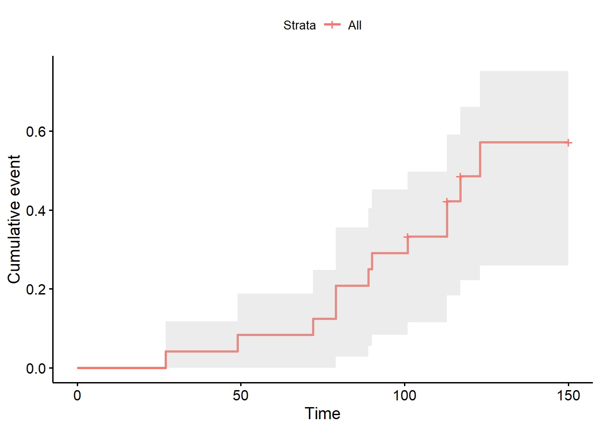
Ou encore la fonction de hasard cummulatif (i.e., cummulative hazard function) à l’aide de la fonction fun="cumhaz".
library(survminer)
cum <- ggsurvplot(km_fit, conf.int = TRUE, fun="cumhaz")
cum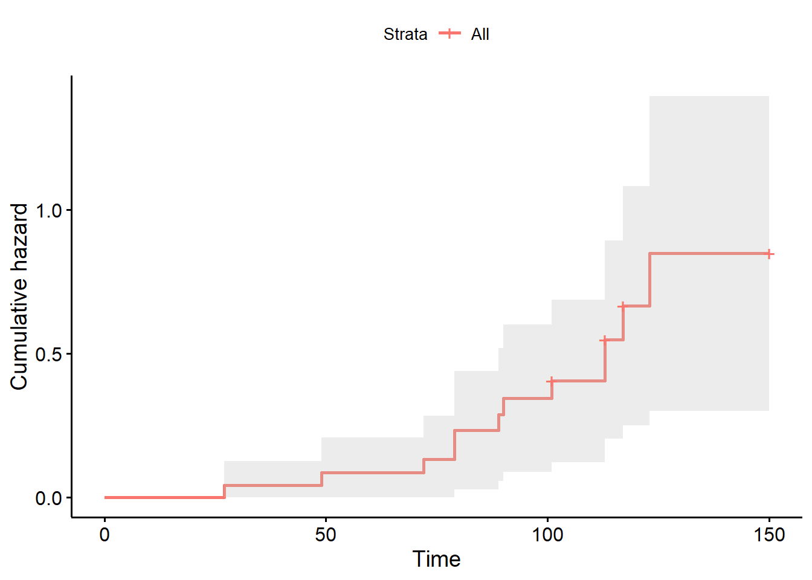
9.3.3 Estimer la probabilité de survie pour un temps donnée
L’argument times= de la fonction survfit() permet d’estimer la proportion (et son IC95) des individus qui “survivront” jusqu’à un temps t. Par exemple, ce code me permet d’estimer que 91.7% (IC95= 81.3, 100) des veaux n’avaient pas eu de pneumonie après 50 jours.
library(survival)
summary(survfit(Surv(days, pn) ~ 1, data=calf), times = 50)## Call: survfit(formula = Surv(days, pn) ~ 1, data = calf)
##
## time n.risk n.event survival std.err lower 95% CI upper 95% CI
## 50 22 2 0.917 0.0564 0.813 19.3.4 Comparaisons entre niveaux d’un prédicteur catégorique
L’analyse de survie non-paramétrique (i.e. Kaplan-Meier) permet de comparer les fonctions de survie des différents niveaux d’un prédicteur catégorique. Le code suivant, par exemple, permet de vérifier l’effet du type d’élevage (variable stock; en batch vs. en continu) sur le temps jusqu’à la pneumonie. Vous aurez maintenant un temps median de survie par niveau d’exposition (notez que celui-ci ne peut pas toujours être calculé, dépendamment du nombre d’observations).
library(survival)
survfit(Surv(days, pn) ~ stock, data=calf)## Call: survfit(formula = Surv(days, pn) ~ stock, data = calf)
##
## n events median 0.95LCL 0.95UCL
## stock=0 12 4 NA 123 NA
## stock=1 12 8 113 79 NAVous aurez également une table de Kaplan-Meier par niveau d’exposition.
library(survival)
km_fit_stock <- survfit(Surv(days, pn) ~ stock, data=calf)
summary(km_fit_stock)## Call: survfit(formula = Surv(days, pn) ~ stock, data = calf)
##
## stock=0
## time n.risk n.event survival std.err lower 95% CI upper 95% CI
## 79 12 1 0.917 0.0798 0.773 1
## 89 11 1 0.833 0.1076 0.647 1
## 101 10 1 0.750 0.1250 0.541 1
## 123 5 1 0.600 0.1673 0.347 1
##
## stock=1
## time n.risk n.event survival std.err lower 95% CI upper 95% CI
## 27 12 1 0.917 0.0798 0.773 1.000
## 49 11 1 0.833 0.1076 0.647 1.000
## 72 10 1 0.750 0.1250 0.541 1.000
## 79 9 1 0.667 0.1361 0.447 0.995
## 90 8 1 0.583 0.1423 0.362 0.941
## 113 7 2 0.417 0.1423 0.213 0.814
## 117 4 1 0.312 0.1398 0.130 0.751Finalement, vous aurez aussi une courbe de survie par niveau d’exposition.
library(survminer)
survie <- ggsurvplot(km_fit_stock, conf.int = TRUE)
survie$plot + theme_bw() +
xlab("Nombre de jours") +
ylab("Probabilité de survie")+
scale_fill_discrete(name = "Type d'élevage", labels = c("En batch", "En continu"))+
scale_color_discrete(name = "Type d'élevage", labels = c("En batch", "En continu"))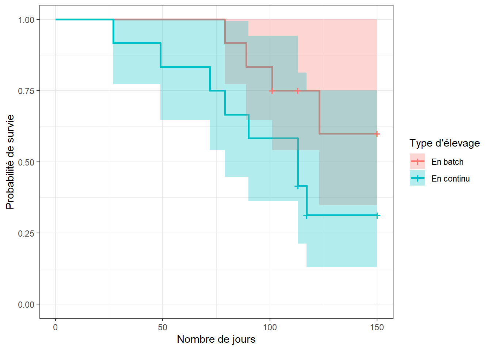
Finalement, vous pourrez tester les différences entre les niveaux d’exposition à l’aide des tests de log-rank et/ou de Wilcoxon à l’aide de la fonction survdiff(). Le premier argument est notre modèle, le deuxième est le jeu de données, l’argument rho=0 permettra d’indiquer que le test de log-rank est désiré. En utilisant rho=1, ce sera plutôt le test de Wilcoxon qui sera réalisé.
library(survival)
#log-rank
survdiff(Surv(days, pn) ~ stock, data=calf, rho=0)## Call:
## survdiff(formula = Surv(days, pn) ~ stock, data = calf, rho = 0)
##
## N Observed Expected (O-E)^2/E (O-E)^2/V
## stock=0 12 4 6.89 1.21 2.99
## stock=1 12 8 5.11 1.63 2.99
##
## Chisq= 3 on 1 degrees of freedom, p= 0.08#Wilcoxon
survdiff(Surv(days, pn) ~ stock, data=calf, rho=1)## Call:
## survdiff(formula = Surv(days, pn) ~ stock, data = calf, rho = 1)
##
## N Observed Expected (O-E)^2/E (O-E)^2/V
## stock=0 12 2.89 5.25 1.06 3.13
## stock=1 12 6.41 4.05 1.38 3.13
##
## Chisq= 3.1 on 1 degrees of freedom, p= 0.08Dans ce cas, les deux tests donnent une valeur de P de 0.08. C’est donc dire que les courbes de survie des veaux élevés en batch ou en continu ne sont pas différentes.
Notez que plus d’une variable peut être utilisée pour stratifier les données. Par exemple, le jeu de données pgtrial.csv contient plusieurs prédicteurs. Cette étude est un essai clinique randomisé sur l’effet de l’administration d’une dose de prostaglandine vs. d’un placebo (la variable tx) au début de la période de reproduction sur le nombre de jours (la variable dar) jusqu’à la conception (la variable preg). L’hypothèse était que l’administration de prostaglandine réduirait le nombre de jours jusqu’à la conception. Les 319 vaches de cette étude étaient suivies jusqu’à un maximum de 346 jours en lait. Trois autres prédicteurs étaient aussi évalués: le nombre de lactation (lact; 1, 2, 3…), l’état de chair (thin; 0=normal, 1=thin) et le troupeau (herd; 3 troupeaux).
pgtrial <-read.csv(file="pgtrial.csv", header=TRUE, sep=";")
head(pgtrial)## herd cow tx lact thin dar preg
## 1 1 1 0 1 0 1 1
## 2 1 2 1 4 1 1 1
## 3 1 3 1 1 0 2 1
## 4 1 4 1 1 0 3 1
## 5 1 5 1 6 0 3 0
## 6 1 6 1 1 0 3 1#J'indique les variables catégoriques dans mon jeu de données
pgtrial$thin <- factor(pgtrial$thin)
pgtrial$herd <- factor(pgtrial$herd) Le code suivant pourra être utilisé pour effectuer une analyse de survie non-paramétrique par groupe de traitement (tx) ET par état de chair (thin). Dans ce cas, vous auriez quatre strates de tx par thin possibles (0-0, 0-1, 1-0, et 1-1). La fonction survfit() vous rapportera alors toutes les comparaisons entre chaque paire de strates (4 comparaisons dans ce cas).
library(survival)
km_fit_pg <- survfit(Surv(dar, preg) ~ tx + thin, data=pgtrial)
survdiff(Surv(dar, preg) ~ tx + thin, data=pgtrial, rho=0)## Call:
## survdiff(formula = Surv(dar, preg) ~ tx + thin, data = pgtrial,
## rho = 0)
##
## N Observed Expected (O-E)^2/E (O-E)^2/V
## tx=0, thin=0 73 63 60.8 0.0806 0.107
## tx=0, thin=1 95 76 88.3 1.7023 2.634
## tx=1, thin=0 73 60 53.8 0.7213 0.928
## tx=1, thin=1 78 65 61.2 0.2380 0.317
##
## Chisq= 2.8 on 3 degrees of freedom, p= 0.4library(survminer)
ggsurvplot(km_fit_pg, conf.int = TRUE)
C’est beaucoup d’information sur une même figure! Vous pourriez aussi la séparer à l’aide de la fonction facet_grid() de la librairie ggplot2 afin de pouvoir comparer plus aisément l’effet du traitement chez les vaches maigres, puis chez les vaches normales.
ggsurv <- ggsurvplot(km_fit_pg, conf.int = TRUE)
ggsurv$plot +theme_bw() +
theme (legend.position = "right")+
facet_grid( ~ thin)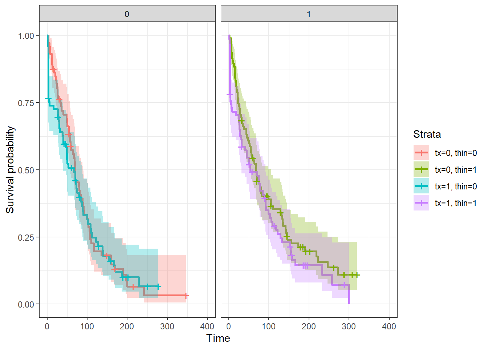
9.4 Régression de Cox à hasard proportionnel
Si on veut comparer la survie de deux groupes en ajustant pour les effets confondants ou des modificateurs d’effet potentiels, on peut utiliser un modèle de risques proportionnels (proportional hazards model) ou modèle de régression de Cox. La fonction coxph() (pour Cox Proportional Hazard) de la librairie survival permet de réaliser les régressions de Cox.
Par exemple, le code suivant permet d’estimer un modèle de Cox à hasard proportionnel qui décrit l’effet d’un traitement à la prostaglandine (tx) sur le temps jusqu’à la conception (dar et preg) après ajustement pour les biais de confusion par la parité (lact), l’état de chair (thin) et le troupeau d’origine (herd).
library(survival)
PH_fit_pg <- coxph(Surv(dar, preg) ~ tx + lact + thin + herd, data=pgtrial)
summary(PH_fit_pg)## Call:
## coxph(formula = Surv(dar, preg) ~ tx + lact + thin + herd, data = pgtrial)
##
## n= 319, number of events= 264
##
## coef exp(coef) se(coef) z Pr(>|z|)
## tx 0.19603 1.21657 0.12543 1.563 0.118
## lact -0.04360 0.95733 0.04118 -1.059 0.290
## thin1 -0.14713 0.86318 0.13804 -1.066 0.286
## herd2 -0.28544 0.75169 0.16993 -1.680 0.093 .
## herd3 0.04032 1.04115 0.17453 0.231 0.817
## ---
## Signif. codes: 0 '***' 0.001 '**' 0.01 '*' 0.05 '.' 0.1 ' ' 1
##
## exp(coef) exp(-coef) lower .95 upper .95
## tx 1.2166 0.8220 0.9514 1.556
## lact 0.9573 1.0446 0.8831 1.038
## thin1 0.8632 1.1585 0.6586 1.131
## herd2 0.7517 1.3303 0.5388 1.049
## herd3 1.0411 0.9605 0.7395 1.466
##
## Concordance= 0.565 (se = 0.019 )
## Likelihood ratio test= 9.94 on 5 df, p=0.08
## Wald test = 9.76 on 5 df, p=0.08
## Score (logrank) test = 9.78 on 5 df, p=0.08La fonction summary() vous permet de rapporter le nombre d’observations (n=319) et le nombre de vaches ayant eu une conception (n=264). Ont vous rapporte ensuite les coefficients pour chacun des prédicteurs, leur erreur-type, leur IC95 et la valeur de P du test de Wald pour ce coefficient particulier. La table suivante présente les hazard ratios (HR) et leur IC95 (ce sont simplement les coefficients et leur IC95 mis à l’exposant). Enfin, le test de rapport de vraisemblance qui vérifie si au moins un coefficient est différent de 0 est présenté (ici, P=0.08).
Pour générer une figure de la fonction de survie de Cox, on devra utiliser la fonction ggadjustedcurves() de la librairie survminer. L’argument variable="tx" me permet de générer des fonctions de survie de Cox par niveaux d’un prédicteur (ici tx).
#La courbe de survie de Cox
library(survminer)
ggadjustedcurves(PH_fit_pg, variable="tx")
Figure 9.1: Figure. Fonction de survie de Cox par niveau de la variable traitement.
9.4.1 Analyses stratifiées
On peut réaliser une analyse stratifiée par un prédicteur à l’aide de la fonction strata(). L’analyse stratifiée par un prédicteur pourra être utile:
- lorsque ce prédicteur ne satisfait pas à la supposition de proportionnalité des Hazard Ratio et que le prédicteur n’est pas d’intérêt direct (e.g. un facteur confondant);
- afin de prendre en compte le regroupement d’observations (la variable de stratification sera alors la variable indiquant le groupe d’appartenance; herd dans l’exemple suivant).
library(survival)
PH_fit_pg <- coxph(Surv(dar, preg) ~ tx + lact + thin + strata(herd), data=pgtrial)
summary(PH_fit_pg)## Call:
## coxph(formula = Surv(dar, preg) ~ tx + lact + thin + strata(herd),
## data = pgtrial)
##
## n= 319, number of events= 264
##
## coef exp(coef) se(coef) z Pr(>|z|)
## tx 0.20490 1.22740 0.12622 1.623 0.105
## lact -0.04218 0.95870 0.04101 -1.029 0.304
## thin1 -0.13871 0.87048 0.13857 -1.001 0.317
##
## exp(coef) exp(-coef) lower .95 upper .95
## tx 1.2274 0.8147 0.9584 1.572
## lact 0.9587 1.0431 0.8847 1.039
## thin1 0.8705 1.1488 0.6634 1.142
##
## Concordance= 0.558 (se = 0.021 )
## Likelihood ratio test= 5.43 on 3 df, p=0.1
## Wald test = 5.44 on 3 df, p=0.1
## Score (logrank) test = 5.46 on 3 df, p=0.1Notez que l’effet de la variable utilisée pour stratifier n’est plus calculé maintenant.
9.4.2 Prédicteur dont la valeur change dans le temps
Lorsqu’un prédicteur peut changer de valeur en cours de suivi, le jeu de données doit être réorganisé avec plusieurs intervalles pour chaque sujet. Ce format s’appelle le counting process format (CP). Le format CP est en fait adapté à plusieurs situations d’analyse de survie complexes:
- quand il y a présence de prédicteurs dont la valeur change dans le temps;
- quand l’âge plutôt que le temps est utilisé comme mesure du suivi (on voudra alors indiquer l’âge de début et l’âge de fin);
- quand il y a des évènements récurrents et/ou que l’occurrence de l’évènement ne peut être observé en continu (ex: animaux testés mensuellement pour identifier l’acquisition d’une infection).
Le format général des données dans le format CP est montré à la table suivante. Pour chaque individu, il y a plusieurs lignes: chaque temps de suivi est divisé en petits intervalles de temps. Il y a aussi deux variables de temps spécifiées pour chaque individu, une indiquant le début du suivi (start dans ce cas) et une indiquant la fin du suivi (stop dans ce cas). Une variable (dead2 dans ce cas) indique ce qui s’est produit à la fin du suivi (dans cet exemple censure=0 et mort=1).
stan <-read.csv(file="stanlong.csv", header=TRUE, sep=";")
head(stan)## id dead surg ageaccpt trans plant start dead2 stop
## 1 1 1 0 30.84463 0 0 0.0 1 49.0
## 2 2 1 0 51.83573 0 0 0.0 1 5.0
## 3 3 1 0 54.29706 1 0 0.0 0 0.1
## 4 3 1 0 54.29706 1 1 0.1 1 15.0
## 5 4 1 0 40.26283 1 0 0.0 0 35.0
## 6 4 1 0 40.26283 1 1 35.0 1 38.0Dans l’exemple plus haut, on voit que les individus 3 et 4 ont bien 2 intervalles de temps (2 rangées) puisque le prédicteur trans (indiquant s’ils ont eu ou non une transplatation cardiaque) à changé de valeur (de 0 à 1) pour ces individus durant l’étude. Ont comprend donc que l’individu 3 a reçu une transplantation très rapidement à 0.1 jour (c’est là que sons statut trans à changé) et il est malheureusement décédé à 15 jours. L’individu 4 a reçu une transplantation 35 jours après son accident cardio-vasculaire et il est décédé 3 jours plus tard, soit 38 jours après son accident cardio-vasculaire.
Pour analyser ce genre de données, vous devrez indiquer les variables indiquant le début et la fin de chaque intervalle dans votre fonction surv() à la place de votre variable représentant le temps (e.g. dur, dar, ou days). Par exemple, le modèle suivant présente le temps d’un accident cardio-vasculaire jusqu’au décès en fonction de si le patient à reçu une transplantation cardiaque (une variable qui peut changer de valeur dans le temps) et après ajustement pour l’âge du patient.
library(survival)
PH_fit_stan <- coxph(Surv(start, stop, dead2) ~ trans + ageaccpt, data=stan)
summary(PH_fit_stan)## Call:
## coxph(formula = Surv(start, stop, dead2) ~ trans + ageaccpt,
## data = stan)
##
## n= 172, number of events= 75
##
## coef exp(coef) se(coef) z Pr(>|z|)
## trans -1.80047 0.16522 0.27225 -6.613 0.0000000000376 ***
## ageaccpt 0.06020 1.06205 0.01531 3.933 0.0000840052418 ***
## ---
## Signif. codes: 0 '***' 0.001 '**' 0.01 '*' 0.05 '.' 0.1 ' ' 1
##
## exp(coef) exp(-coef) lower .95 upper .95
## trans 0.1652 6.0525 0.0969 0.2817
## ageaccpt 1.0620 0.9416 1.0307 1.0944
##
## Concordance= 0.721 (se = 0.035 )
## Likelihood ratio test= 44.46 on 2 df, p=0.0000000002
## Wald test = 46.04 on 2 df, p=0.0000000001
## Score (logrank) test = 51.05 on 2 df, p=0.000000000008Le HR de décès chez les patients ayant eu une transplantation cardiaque était 0.17 (IC95: 0.10, 0.28) fois celui de ceux qui n’en ont pas eu. Pour cette dernière catégorie, le temps passé sans transplantation par des patients qui seront transplantés dans le futur est aussi compilé.
9.4.3 Prédicteur dont l’effet change dans le temps
Avec le modèle de régression de Cox, le risque peut évoluer au cours du temps, mais il doit rester proportionnel entre sujets avec différents niveaux d’exposition. Cette suposition pourra être vérifiée (voir section évaluation du modèle). Cette supposition peut aussi être relaxée en ajoutant une interaction entre le temps et un prédicteur. Si cette interaction est significativement différente de zéro, on concluera que le risque n’était pas proportionnel et ont présentera alors les résultats du modèle avec l’interaction. Pour ce faire, la variable représentant le temps pourra être transformée (e.g., une transformation log, une catégorisation en deux, ou plus de deux catégories, etc) en fonction de la biologie du phénomène étudié.
Par exemple, le code suivant permettrait d’évaluer une interaction avec le temps représentant un changement d’effet de la prostaglandine entre les 5 premiers jours vs. le reste de la période de suivi. Ont pourrait émettre l’hypothèse que le traitement aux prostaglandines aura un effet dans les 5 jours suivants l’administration, mais aucun ou peu d’effet par la suite. Important: en ajoutant un terme d’interaction (ex: \(tx*time5\) dans votre fonction coxph(), R incluera automatiquement les deux termes principaux pour cette interaction (\(tx\) et \(time5\)) en plus de l’interaction (\(tx*time5\)). Or, il n’est pas possible d’estimer dans ce modèle le terme principal \(time5\) puisque la notion de temps fait également partie de l’issue. Vous devrez donc indiquer à R de retirer ce terme principal simplement en ajoutant - time5 dans votre modèle. De cette manière, ce terme ne sera pas inclu.
#Je commence par créer une prédicteur "temps" que j'ai nommer time et qui prend les valeurs 0-5 days vs. >5 days
pgtrial$time5 <- cut(pgtrial$dar, breaks = c(0, 5, Inf),labels = c("0-5 days", ">5 days"))
#Ensuite, je peux tester une interaction entre time et tx
library(survival)
PH_fit_pg <- coxph(Surv(dar, preg) ~ tx*time5 -time5 + lact + thin + herd, data=pgtrial)
summary(PH_fit_pg)## Call:
## coxph(formula = Surv(dar, preg) ~ tx * time5 - time5 + lact +
## thin + herd, data = pgtrial)
##
## n= 319, number of events= 264
##
## coef exp(coef) se(coef) z Pr(>|z|)
## tx 5.461468 235.442858 0.589539 9.264 <2e-16 ***
## lact -0.055402 0.946105 0.039061 -1.418 0.156
## thin1 -0.170799 0.842991 0.138408 -1.234 0.217
## herd2 -0.217645 0.804411 0.170209 -1.279 0.201
## herd3 -0.037483 0.963211 0.176023 -0.213 0.831
## tx:time5>5 days -5.638785 0.003557 0.595293 -9.472 <2e-16 ***
## ---
## Signif. codes: 0 '***' 0.001 '**' 0.01 '*' 0.05 '.' 0.1 ' ' 1
##
## exp(coef) exp(-coef) lower .95 upper .95
## tx 235.442858 0.004247 74.142836 747.65604
## lact 0.946105 1.056966 0.876376 1.02138
## thin1 0.842991 1.186252 0.642702 1.10570
## herd2 0.804411 1.243146 0.576229 1.12295
## herd3 0.963211 1.038194 0.682166 1.36004
## tx:time5>5 days 0.003557 281.121076 0.001108 0.01142
##
## Concordance= 0.663 (se = 0.021 )
## Likelihood ratio test= 199.5 on 6 df, p=<2e-16
## Wald test = 96.56 on 6 df, p=<2e-16
## Score (logrank) test = 459.8 on 6 df, p=<2e-16Nous notons maintenant que, comme l’hypothèse que nous avions émise, le traitement aux prostaglandine augmente le hasard de conception dans le 5 jours suivant l’injection (HR= 235). Par contre, après 5 jours, l’effet semble minime. Le coefficient après 5 jours serait de -0.18 (i.e., 5.46 + -5.64), donc un HR de 0.84. L’interaction est significative (P< 0.001). Ont pourrait demander des contrastes pour comparer ces derniers résultats.
library(emmeans)
#Je génère d'abord l'objet contrast à partir de mon modèle
contrast <- emmeans(PH_fit_pg, c("tx", "time5"))
#Je demande les comparaisons pairées, je voulais voir Tx=1 vs Tx=0, j'ai donc du utilisé reverse=TRUE. Puis j'ai ajouté les IC95 avec confint
result <- confint(pairs(contrast, reverse = TRUE))
#Je retravaille mes résultats pour la présentation. D'abord en les mettant à l'exposant pour avoir des HR, puis en arrondissant.
result$HR <- round(exp(result$estimate), digits=2)
result$lowCI <- round(exp(result$asymp.LCL), digits=2)
result$hiCI <- round(exp(result$asymp.UCL), digits=2)
#Je ne conserve que les rangée (2 et 5) et les colonnes (1, 7, 8, 9) qui m'intéressent
result2 <- result[c(2,5),c(1, 7, 8, 9)]
library(knitr)
library(kableExtra)
kable (result2, caption="HR et IC95 d'un traitement à la prostaglandine sur le risque de conception dans les 5 jours suivant le traitement vs. après 5 jours.")%>%
kable_styling()| contrast | HR | lowCI | hiCI | |
|---|---|---|---|---|
| 2 | (0-5 days 1) - (0-5 days 0) | 235.44 | 51.78 | 1070.64 |
| 5 | >5 days 1 - >5 days 0 | 0.84 | 0.59 | 1.20 |
Dans les 5 jours suivant l’injection le HR est de 235.44 (IC95: 51.78, 1070.64), alors que après 5 jours, le HR est de 0.84 (IC95: 0.59, 1.20).
Le code suivant permettrait d’évaluer une interaction avec le temps représentant un changement d’effet exponentiel durant la période de suivi (i.e., un effet qui diminue ou augmente graduellement, plutôt que de manière catégorique).
#Je commence par créer une prédicteur "temps" logarithmique
pgtrial$lntime <- log(pgtrial$dar)
#Ensuite, je peux tester une interaction entre lntime et tx
library(survival)
PH_fit_pg <- coxph(Surv(dar, preg) ~ tx*lntime -lntime + lact + thin + herd, data=pgtrial)
summary(PH_fit_pg)## Call:
## coxph(formula = Surv(dar, preg) ~ tx * lntime - lntime + lact +
## thin + herd, data = pgtrial)
##
## n= 319, number of events= 264
##
## coef exp(coef) se(coef) z Pr(>|z|)
## tx 8.04911 3131.01263 0.59026 13.636 <2e-16 ***
## lact -0.04273 0.95817 0.03956 -1.080 0.280
## thin1 -0.11277 0.89336 0.14024 -0.804 0.421
## herd2 -0.10207 0.90297 0.16959 -0.602 0.547
## herd3 -0.10909 0.89665 0.17738 -0.615 0.539
## tx:lntime -1.80673 0.16419 0.13385 -13.498 <2e-16 ***
## ---
## Signif. codes: 0 '***' 0.001 '**' 0.01 '*' 0.05 '.' 0.1 ' ' 1
##
## exp(coef) exp(-coef) lower .95 upper .95
## tx 3131.0126 0.0003194 984.5795 9956.7790
## lact 0.9582 1.0436592 0.8867 1.0354
## thin1 0.8934 1.1193698 0.6787 1.1760
## herd2 0.9030 1.1074618 0.6476 1.2590
## herd3 0.8967 1.1152585 0.6333 1.2694
## tx:lntime 0.1642 6.0904812 0.1263 0.2134
##
## Concordance= 0.75 (se = 0.019 )
## Likelihood ratio test= 302.2 on 6 df, p=<2e-16
## Wald test = 191.9 on 6 df, p=<2e-16
## Score (logrank) test = 448.9 on 6 df, p=<2e-16Ici aussi l’interaction est significative (P<0.001). Au jour 1 (lntime=0), l’effet du tx est un HR de exp(8.05) ou 3131! Puis, l’effet du traitement en log(HR) diminue de -1.81 à chaque augmentation de 1 log jour. Pour mieux visualiser tout ça, une figure pourrait être utile.
#Je génère le jeu de données avec les valeurs de temps qui m'intéressent (jours 1 à 90) et j'y met les coefficients dont j'ai besoin.
new <- data.frame(tx=8.04, tx_lntime_int=-1.81, time=c(1:90))
new$lntime <- log(new$time)
new$hr <- exp(new$tx + new$lntime*new$tx_lntime_int)
library(ggplot2)
ggplot(new, mapping=aes(x=time, y=hr))+
geom_line()+
theme_bw() +
ylab(label = "Hazard ratio")
Figure 9.2: Figure. Hasard ratio présentant l’effet de la prostaglandine sur le hasard de conception en fonction des jours suivant l’injection.
On note que l’effet du traitement diminue rapidement. Notre modèle 0-5 vs. >5 jours indiquait le même patron (et était peut-être aussi plus simple à expliquer?).
9.5 Évaluation du modèle
9.5.1 Linéarité de la relation (pour les prédicteurs quantitatifs)
La linéarité de la relation est une supposition importante du modèle. Pour les prédicteurs quantitatifs, vous devrez toujours vérifier si cette supposition est bien respectée. Vous pouvez le faire simplement à l’aide du modèle polynomial comme vu précédemment (en ajoutant le \(prédicteur^2\) ou le \(prédicteur^2\) et le \(prédicteur^3\) dans votre modèle).
Une autre possibilité est l’évaluation du graphique du prédicteur quantitatif que nous désirons évaluer par les résiduels de Martingdale d’un modèle sans le prédicteur quantitatif. Une fonction de lissage (comme vu précédemment) permettra de visualiser s’il y a une courbe ou non dans la relation. Les résiduels de Martingdale peuvent être obtenus grâce à la fonction resid(). La relation pourra être représentée grâce à la fonction ggplot de la librairie ggplot2. Par exemple, le code suivant permet d’évaluer la linéarité de la relation entre la variable lact et le hasard de conception.
#Faire rouler le modèle sans le prédicteur continu lact
PH_fit_pg_WO_lact <- coxph(Surv(dar, preg) ~ tx + thin + herd, data=pgtrial)
#Ajouter les résiduels de Martingale dans mon jeu de données
pgtrial$res <- resid(PH_fit_pg_WO_lact)
library(ggplot2)
ggplot(data=pgtrial, mapping=aes(x=lact, y=res))+
geom_point() + #Je demande d'ajouter le nuage de points (un 'scatterplot')
geom_smooth(method="loess", span=2)+ #Je demande d'ajouter la courbe lissée de type loess.
theme_bw() 
Figure 9.3: Figure. Graphique des résiduel de Martingdale en fonction de la parité.
Dans cet exemple, on note que la relation est curvilinéaire. Notez que le modèle polynomial indique également que le terme au carré est important (P = 0.03) et que la relation n’était donc pas linéaire (voir le code qui suit).
#Lactation centrée sur 2ième parité et au carré
pgtrial$lact_ct <- pgtrial$lact-2
pgtrial$lact_ct_sq <- (pgtrial$lact-2)*(pgtrial$lact-2)
#La régression de cox avec terme polynomiaux
PH_fit_pg_lact_sq <- coxph(Surv(dar, preg) ~ tx + lact_ct + lact_ct_sq + thin + herd, data=pgtrial)
summary(PH_fit_pg_lact_sq)## Call:
## coxph(formula = Surv(dar, preg) ~ tx + lact_ct + lact_ct_sq +
## thin + herd, data = pgtrial)
##
## n= 319, number of events= 264
##
## coef exp(coef) se(coef) z Pr(>|z|)
## tx 0.19308 1.21298 0.12502 1.544 0.1225
## lact_ct -0.17281 0.84129 0.07193 -2.402 0.0163 *
## lact_ct_sq 0.04676 1.04787 0.02108 2.218 0.0266 *
## thin1 -0.09586 0.90859 0.13897 -0.690 0.4903
## herd2 -0.29904 0.74153 0.16985 -1.761 0.0783 .
## herd3 0.01297 1.01305 0.17417 0.074 0.9406
## ---
## Signif. codes: 0 '***' 0.001 '**' 0.01 '*' 0.05 '.' 0.1 ' ' 1
##
## exp(coef) exp(-coef) lower .95 upper .95
## tx 1.2130 0.8244 0.9494 1.5498
## lact_ct 0.8413 1.1886 0.7307 0.9687
## lact_ct_sq 1.0479 0.9543 1.0054 1.0921
## thin1 0.9086 1.1006 0.6920 1.1930
## herd2 0.7415 1.3486 0.5316 1.0344
## herd3 1.0131 0.9871 0.7201 1.4252
##
## Concordance= 0.571 (se = 0.02 )
## Likelihood ratio test= 14.66 on 6 df, p=0.02
## Wald test = 14.66 on 6 df, p=0.02
## Score (logrank) test = 14.73 on 6 df, p=0.029.5.2 Valider la supposition de hasard proportionnel
La supposition de risque proportionnel peut être vérifiée en ajoutant une interaction avec le temps (comme présenté à la section “Prédicteur dont l’effet change dans le temps”). Cette interaction peut également être une solution lorsque la supposition de risque proportionnel n’est pas respectée. Mais il existe plusieurs autres méthodes afin de vérifier la supposition de risque proportionnel.
9.5.2.1 Pour un prédicteur catégorique:
Option 1: Comparer graphiquement le log du hasard cummulatif ln H(t) par le log du temps pour chaque niveau du prédicteur. Ces droites devraient être parallèles si les hasards sont proportionnels. Le graphique ln H(t) * ln(t) peut être produit en: 1) faisant tourner un modèle de Kaplan-Meier avec juste la variable qui nous intéresse (tx dans l’exemple qui suit) à l’aide de la fonction survfit(), puis 2) en demandant de produire la figure à partir de cet objet à l’aide de la fonction plot() et de l’argument fun=cloglog (qui indique la figure désirée, c’est à dire ln H(t)*ln(t)).
library(survival)
#Le modèle de K-M avec la variable qui m'intéresse
KM_fit_pg <- survfit(Surv(dar, preg) ~ tx, data=pgtrial)
#La figure ln(H(t)) par ln(temps)
plot(KM_fit_pg, col=c("blue", "red"), fun="cloglog", xlab="days", ylab="Log(H(t))")
Figure 9.4: Figure. Graphique du log du hasard cumulatif (ln H(t)) par le log du temps (ln(t)).
Ici, les droites ne sont clairement pas parallèles jusqu’à approximativement 20 à 50 jours.
Option 2: comparer graphiquement les courbes de survie produites à l’aide du modèle de Cox (qui suppose hasard proportionnel) et d’une analyse de survie non-paramétrique (Kaplan-Meier; qui ne suppose rien). Les graphiques devraient être très similaires si les hasards sont proportionnels.
library(survminer)
#La courbe de survie de Kaplan-Meier
ggsurvplot(KM_fit_pg)
Figure 9.5: Figure. Courbes de survie de Kaplan-Meier pour la variable traitement.
#Le modèle de cox équivalent
library(survival)
PH_fit_pg <- coxph(Surv(dar, preg) ~ tx, data=pgtrial)
#La courbe de survie de Cox
ggadjustedcurves(PH_fit_pg, variable="tx")Figure 9.6: *Figure.** Courbes de survie de Cox pour la variable traitement.
Notez que les courbes de survie de Kaplan-Meier et de Cox sont passablement différentes entre 0 et 50 jours.
9.5.2.2 Pour un prédicteur catégorique OU quantitatif
Une dernière approche qui permet d’évaluer la supposition de risque proportionnel et qui fonctionne pour des prédicteurs catégoriques OU quantitatifs est l’évaluation d’un graphique des résiduels de Schoenfeld par le logarithme du temps (t). Une fonction de lissage pourra être utilisée afin de visualiser la tendance générale. Si la supposition de risque proportionnel est respectée, une ligne de tendance horizontale (i.e. avec une pente=0) devrait être observée. Notez qu’un résiduel de Schoenfeld différent sera produit pour chacun des prédicteurs du modèle. Vous devrez donc utiliser le résiduel correspondant au prédicteur que vous désirez évaluer.
Pour générer cette figure, vous devrez d’abord créer votre objet modèle de Cox (à l’aide de la fonction coxph()). Puis, vous devez créer un nouvel objet à partir de celui-ci à l’aide de la fonction cox.zph() de la librairie survival. Finalement, à l’aide de la librairie survminer vous pourrez utiliser la fonction ggcoxzph() sur ce dernier objet. Dans l’exemple suivant, je vérifie la supposition de hasard proportionnel pour la variable lact.
#Je génère le modèle de Cox
library(survival)
PH_fit_pg <- coxph(Surv(dar, preg) ~ tx + lact + thin + herd, data=pgtrial)
#Je génère l'objet cox.zph
fit <- cox.zph(PH_fit_pg)
#Je demande la figure spécifiquement pour la variable lact
library(survminer)
ggcoxzph(fit, var="lact") 
Dans ce cas, la ligne est très près d’être horizontale (i.e. pente=0). La supposition de hasard proportionnel est donc probablement respectée pour la variable lact. Notez que le résultat d’un test de Schoenfeld est également présenté. L’hypothèse nulle de ce test est que la pente n’est pas différente de zéro (i.e., la supposition de hasard proportionnel est respectée).
À titre d’exemple, voici la même analyse, mais pour la variable tx. Rappellez-vous, nous avons déjà identifié de différentes manières que la supposition de hasard proportionnel pour cette variable est problématique.
library(survminer)
ggcoxzph(fit, var="tx") 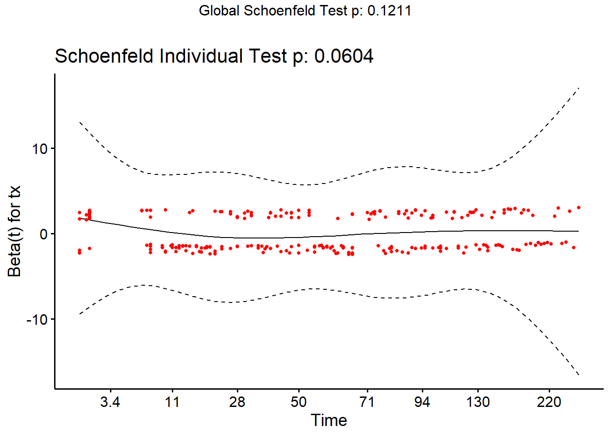
Notez la courbe au tout début (i.e. entre 0 et 28 jours). Le test est près d’être significatif (P = 0.06).
9.5.3 Évaluer impact du non-respect de la supposition de censure non-informative
On ne peut évaluer si la supposition de censure non-informative est respectée, mais ont peut cependant vérifier quel aurait été l’impact d’une censure informative. Pour cela, on doit modifier le jeu de données pour représenter les scénarios les plus extrêmes.
- D’une part toutes les données censurées remplacées par un échec au moment de la censure (corrélation positive).
- D’autre part, ont pourrait remplacer la durée de suivi des données censurées par un temps lointain, mais plausible (corrélation négative).
Ensuite, on éxécutera le modèle de Cox avec ces deux scénarios et on comparera les résultats obtenus à notre modèle initial. On se demandera:
1) est-ce que les conclusions statistiques changent (e.g. un prédicteur n’est plus significatif)?
2) est-ce que les ratio de hasard changent beaucoup (e.g. 2.0 vs. 2.2 ou 2.0 vs. 12.0)?
Par exemple:
#Impact de la censure
#Estimés originaux
library(survival)
PH_fit_pg <- coxph(Surv(dar, preg) ~ tx + lact + thin + herd, data=pgtrial)
#Corrélation positive complète
#Je créer une nouvelle variable où toutes les observations se terminent par l'événement
pgtrial$preg2 <- 1
#Le modèle avec cette variable
PH_fit_pg_pos <- coxph(Surv(dar, preg2) ~ tx + lact + thin + herd, data=pgtrial)
#Corrélation négative complète
#Je créer une nouvelle variable où toutes les vaches non-gestantes auraient vécu jusqu'à au moins 500 JEL sans conception avant d'être finalement réformées
pgtrial$dar2 <- ifelse(pgtrial$preg==1,pgtrial$dar,500)
#Le modèle avec cette variable
PH_fit_pg_neg <- coxph(Surv(dar2, preg) ~ tx + lact + thin + herd, data=pgtrial)
#tableau récapitulatif
tableau <- cbind("Estimés originaux"=exp(PH_fit_pg$coefficients), "Corrélation positive complète"=exp(PH_fit_pg_pos$coefficients), "Corrélation négative complète"=exp(PH_fit_pg_neg$coefficients))
library(knitr)
library(kableExtra)
kable (round(tableau, digits=2), caption="HR d'un traitement à la prostaglandine sur le risque de conception. Modèle initial, puis modèles supposant corrélation positive et négative complètes.")%>%
kable_styling()| Estimés originaux | Corrélation positive complète | Corrélation négative complète | |
|---|---|---|---|
| tx | 1.22 | 1.26 | 1.12 |
| lact | 0.96 | 1.00 | 0.93 |
| thin1 | 0.86 | 0.86 | 0.94 |
| herd2 | 0.75 | 0.80 | 0.77 |
| herd3 | 1.04 | 1.02 | 1.05 |
Ici, on note peu de différence des ratio de hasard d’un modèle à l’autre. Notez que la fonction ggforest() de la librairie survminer produit une autre manière de visualiser/comparer nos résultats rapidement. Par exemple, pour nos 3 modèles:
library(survminer)
ggforest(PH_fit_pg, main = "HR modèle initial")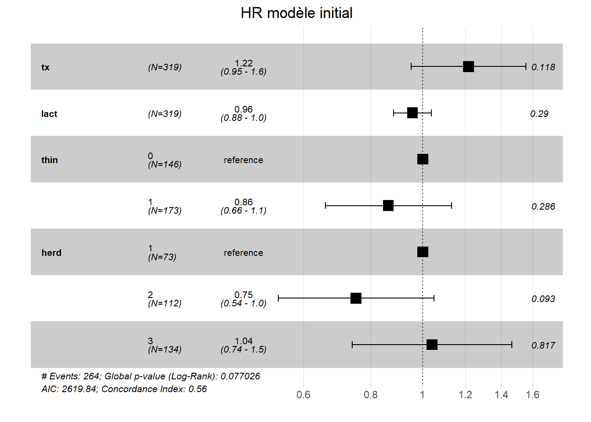
ggforest(PH_fit_pg_pos, main = "HR corrélation positive complète")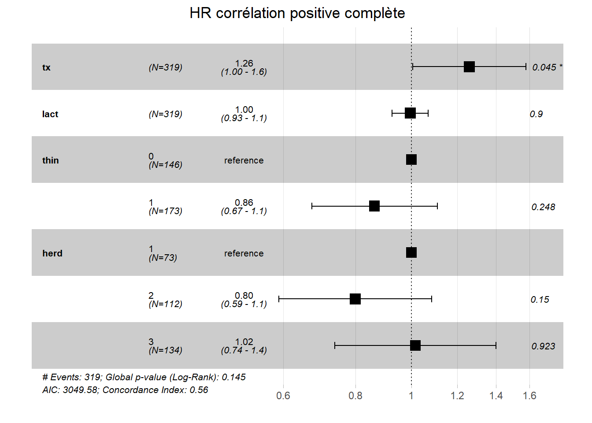
ggforest(PH_fit_pg_neg, main = "HR corrélation négative complète")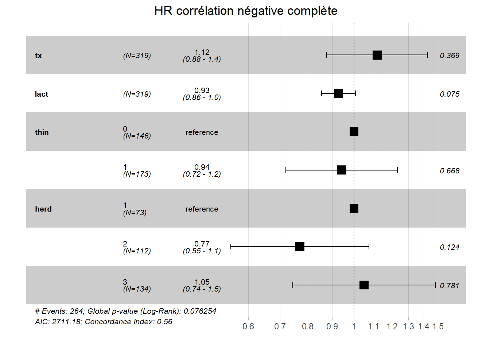
9.5.4 Observations extrêmes
Les résiduels de déviance peuvent être utilisés afin d’identifier les observations extrêmes. Ont peut les produire à l’aide de la fonction resid() en spécifiant type="deviance". On pourra ensuite les représenter graphiquement en fonction du temps à l’aide de la fonction ggplot(). On devra aussi tenter d’identifier si ces observations ont un profil de prédicteurs et variable dépendante commun.
#Ajouter les résiduels de déviance à ma table
pgtrial$res.dev <- resid(PH_fit_pg, type="deviance")
library(ggplot2)
ggplot(data=pgtrial, mapping=aes(x=dar, y=res.dev)) +
geom_point() +
theme_bw() Figure 9.7: Figure. Résiduels de déviance en fonction du temps.
#Je pourrais maintenant filtrer cette table pour ne conserver que les résiduels standardisés larges (en fait, il n'y en avait aucun >3.0 ou <-3.0)
res_large <- subset(pgtrial, (res.dev >=2.0 | res.dev<=-2.0))
kable (res_large, caption="Observations avec les résiduels les plus larges.")%>%
kable_styling()| herd | cow | tx | lact | thin | dar | preg | time5 | lntime | res | lact_ct | lact_ct_sq | preg2 | dar2 | res.dev | |
|---|---|---|---|---|---|---|---|---|---|---|---|---|---|---|---|
| 1 | 1 | 1 | 0 | 1 | 0 | 1 | 1 | 0-5 days | 0.0000000 | 0.9917920 | -1 | 1 | 1 | 1 | 2.734574 |
| 2 | 1 | 2 | 1 | 4 | 1 | 1 | 1 | 0-5 days | 0.0000000 | 0.9916056 | 2 | 4 | 1 | 1 | 2.764111 |
| 3 | 1 | 3 | 1 | 1 | 0 | 2 | 1 | 0-5 days | 0.6931472 | 0.9778236 | -1 | 1 | 1 | 2 | 2.351804 |
| 73 | 1 | 76 | 1 | 1 | 0 | 277 | 0 | >5 days | 5.6240175 | -3.4421658 | -1 | 1 | 1 | 500 | -2.710981 |
| 74 | 2 | 78 | 0 | 2 | 1 | 1 | 1 | 0-5 days | 0.0000000 | 0.9947488 | 0 | 0 | 1 | 1 | 2.902334 |
| 75 | 2 | 79 | 1 | 4 | 0 | 1 | 1 | 0-5 days | 0.0000000 | 0.9923152 | 2 | 4 | 1 | 1 | 2.813330 |
| 76 | 2 | 80 | 1 | 1 | 0 | 2 | 1 | 0-5 days | 0.6931472 | 0.9830284 | -1 | 1 | 1 | 2 | 2.467808 |
| 176 | 2 | 180 | 1 | 2 | 0 | 201 | 0 | >5 days | 5.3033049 | -2.0393102 | 0 | 0 | 1 | 500 | -2.028332 |
| 180 | 2 | 184 | 1 | 2 | 0 | 250 | 0 | >5 days | 5.5214609 | -2.4248224 | 0 | 0 | 1 | 500 | -2.208513 |
| 183 | 2 | 187 | 1 | 3 | 1 | 288 | 0 | >5 days | 5.6629605 | -2.2021736 | 1 | 1 | 1 | 500 | -2.090547 |
| 185 | 2 | 189 | 0 | 1 | 0 | 346 | 0 | >5 days | 5.8464388 | -2.3808125 | -1 | 1 | 1 | 500 | -2.237670 |
| 314 | 3 | 318 | 0 | 1 | 1 | 262 | 0 | >5 days | 5.5683445 | -2.4382604 | -1 | 1 | 1 | 500 | -2.277784 |
| 315 | 3 | 319 | 0 | 2 | 1 | 262 | 0 | >5 days | 5.5683445 | -2.4382604 | 0 | 0 | 1 | 500 | -2.228663 |
| 316 | 3 | 320 | 0 | 4 | 1 | 287 | 0 | >5 days | 5.6594822 | -2.5542742 | 2 | 4 | 1 | 500 | -2.182537 |
| 317 | 3 | 321 | 0 | 2 | 1 | 288 | 0 | >5 days | 5.6629605 | -2.5542742 | 0 | 0 | 1 | 500 | -2.279806 |
| 318 | 3 | 322 | 0 | 3 | 1 | 308 | 0 | >5 days | 5.7300998 | -2.8241677 | 1 | 1 | 1 | 500 | -2.342337 |
| 319 | 3 | 323 | 0 | 2 | 1 | 320 | 0 | >5 days | 5.7683210 | -2.8241677 | 0 | 0 | 1 | 500 | -2.393963 |
9.5.5 Observations influentes
Les résiduels de score ou les delta-betas peuvent être utilisés afin d’identifier les observations influentes. Notez que, comme pour les résiduels de Schoenfeld, un résiduel de score (et un delta-beta) différent sera produit pour chacun des prédicteurs du modèle. Vous devrez donc utiliser le résiduel correspondant au prédicteur que vous désirez évaluer.
Ont peut également les produire à l’aide de la fonction resid(), l’argument type="score" génèrera les résiduels de Score. type="dfbetas" sera utilisé pour les delta-betas. Ont pourra ensuite les représenter graphiquement en fonction du temps à l’aide de la fonction ggplot(). Lorsque représenté en fonction du temps, ces résiduels ressembleront à un genre de « ventilateur ». Les points en dehors du ventilateur seront les plus influants. On devra tenter d’identifier si ces observations ont un profil de prédicteurs et de variable dépendante particulier.
Le code suivant permettra, par exemple, de produire les résiduels de score pour chacun des prédicteurs et de visualiser la figure pour la variable tx. Pour la figure, j’ai utilisé la librairie ggrepel et la fonction geom_text_repel() qui me permet d’identifier les points sur la figure.
#Créer les résiduels de déviance dans une table
y <- data.frame(resid(PH_fit_pg, type="score"))
#Joindre ces éléments dans ma table initiale
#Renommer les variables
library(data.table)
setnames(y, old = c('tx','lact', 'thin1', 'herd2', 'herd3'), new = c('score_tx','score_lact', 'score_thin', 'score_herd2', 'score_herd3'))
#Combiner les tables
a <- cbind(pgtrial, y)
#Visualiser résiduels de score de tx en fonction du temps
library(ggplot2)
library(ggrepel)
ggplot(data=a, mapping=aes(x=dar, y=score_tx)) +
geom_point() +
theme_bw() +
geom_text_repel(aes(label = cow))Figure 9.8: Figure. Résiduels de score de la variable TX en fonction du temps.
9.6 Pour aller plus loin
9.6.1 Erreurs-types robustes
Lorsqu’il y a regroupement des observations (e.g. des animaux regroupés en troupeaux), la supposition d’indépendance des observations n’est pas respectée. Comme vu au cours, ont poura remédier à ce problème en incluant la variable « groupe » (e.g. l’identifiant du troupeau) comme prédicteur ou en stratifiant l’analyse de Cox par cette variable. Les erreur-types robustes peuvent aussi être utilisées pour régler ce problème. L’argument cluster() permettra le calcul d’erreur-types robustes. On indiquera entre parenthèse une variable décrivant l’unité d’analyse (ici la vache).
library(survival)
PH_fit_pg <- coxph(Surv(dar, preg) ~ tx + lact + thin + cluster(cow), data=pgtrial)
summary(PH_fit_pg)## Call:
## coxph(formula = Surv(dar, preg) ~ tx + lact + thin, data = pgtrial,
## cluster = cow)
##
## n= 319, number of events= 264
##
## coef exp(coef) se(coef) robust se z Pr(>|z|)
## tx 0.15620 1.16906 0.12371 0.12261 1.274 0.203
## lact -0.05054 0.95071 0.04020 0.03820 -1.323 0.186
## thin1 -0.10009 0.90476 0.12556 0.12347 -0.811 0.418
##
## exp(coef) exp(-coef) lower .95 upper .95
## tx 1.1691 0.8554 0.9193 1.487
## lact 0.9507 1.0518 0.8821 1.025
## thin1 0.9048 1.1053 0.7103 1.152
##
## Concordance= 0.547 (se = 0.021 )
## Likelihood ratio test= 4.4 on 3 df, p=0.2
## Wald test = 4.28 on 3 df, p=0.2
## Score (logrank) test = 4.38 on 3 df, p=0.2, Robust = 4.32 p=0.2
##
## (Note: the likelihood ratio and score tests assume independence of
## observations within a cluster, the Wald and robust score tests do not).9.6.2 Régression de Cox à fragilité partagée
Un modèle de régression de Cox à fragilité partagée peut-être utilisé afin de prendre en compte le regroupement des observations (i.e., la dépendance entre les observations). L’argument frailty() permettra d’indiquer comment les données sont regroupées (i.e. permet d’ajouter un effet aléatoire groupe). Notez qu’on ne pourra indiquer qu’un seul niveau de regroupement (e.g., vaches regroupées par troupeaux).
library(survival)
PH_fit_pg <- coxph(Surv(dar, preg) ~ tx + lact + thin + frailty(herd), data=pgtrial)
summary(PH_fit_pg)## Call:
## coxph(formula = Surv(dar, preg) ~ tx + lact + thin + frailty(herd),
## data = pgtrial)
##
## n= 319, number of events= 264
##
## coef se(coef) se2 Chisq DF p
## tx 0.17683 0.12456 0.12417 2.02 1.00 0.160
## lact -0.04668 0.04058 0.04034 1.32 1.00 0.250
## thin1 -0.12589 0.13067 0.12774 0.93 1.00 0.340
## frailty(herd) 2.75 0.91 0.086
##
## exp(coef) exp(-coef) lower .95 upper .95
## tx 1.1934 0.8379 0.9349 1.523
## lact 0.9544 1.0478 0.8814 1.033
## thin1 0.8817 1.1342 0.6825 1.139
## gamma:1 1.0349 0.9663 0.8691 1.232
## gamma:2 0.9016 1.1091 0.7568 1.074
## gamma:3 1.0635 0.9403 0.8984 1.259
##
## Iterations: 7 outer, 20 Newton-Raphson
## Variance of random effect= 0.01113406 I-likelihood = -1307.3
## Degrees of freedom for terms= 1.0 1.0 1.0 0.9
## Concordance= 0.56 (se = 0.02 )
## Likelihood ratio test= 8.57 on 3.85 df, p=0.079.7 Travaux pratiques 8 - Analyses de survie non-paramétriques
9.7.1 Exercices
Pour ce TP utilisez le fichier pgtrial.csv (voir description VER p.824). Cette étude est un essai clinique randomisé sur l’effet de l’administration d’une dose de prostaglandine vs. d’un placebo (la variable tx; 0=placebo, 1=prostaglandines) au début de la période de reproduction sur le nombre de jours (la variable dar) jusqu’à la conception (la variable preg, 0=censure, 1=gestation). L’hypothèse était que l’administration de prostaglandine réduirait le nombre de jours jusqu’à la conception. Les 319 vaches de cette étude étaient suivies jusqu’à un maximum de 346 jours en lait. Trois autres prédicteurs étaient aussi évalués : la parité (lact; 1, 2, 3…), l’état de chair (thin; 0=normal, 1=maigre) et le troupeau d’appartenance (herd; 3 troupeaux).
Combien des 319 vaches ont réussi à concevoir et combien étaient toujours non-gestante (i.e. observations censurées) à la fin de la période de suivi?
Il y a donc passablement d’observations censurées dans ce jeu de données, une analyse de survie serait donc appropriée. Produisez la table et le graphique de survie de Kaplan-Meier.
2.1. Quelle proportion et quel nombre de vaches avait « survécu » (i.e. n’avait pas eu de conception) à 5 jours suivant l’administration des traitement? Notez, que suite à l’administration de prostaglandines, une chaleur est souvent notée dans les 2-5 jours, suivant l’injection.
2.2. Quel était le temps médian jusqu’à la conception et quel était son IC95%?
- Comparer maintenant les fonctions de survie des vaches ayant reçu la prostaglandine vs. le placebo.
3.1. Visuellement que notez-vous lorsque vous comparez les fonctions de survie de ces deux groupes de vaches?
3.2. Quelles étaient les proportions de vaches gestantes dans les groupes prostaglandines vs. placebo aux jours 5, 26 et 100?
3.3. Les fonctions de survie des deux groupes de traitement sont-elles statistiquement différentes?
3.4. Comme la conception est, en général, un événement positif, les chercheurs trouveraient plus approprié de présenter la fonction d’échec plutôt que la fonction de survie dans leur article. Représentez les fonctions d’échec des groupes prostaglandines et placebo avec leurs IC95%. Que représente maintenant l’axe des Y?
3.5. Lorsque vous comparer l’IC95% de la fonction d’échec de Kaplan-Meier du groupe prostaglandines à la fonction d’échec du groupe placebo. Arrivez-vous aux mêmes conclusions que celles obtenues à l’aide des tests de Wilcoxon et Log-rank?
3.6. Comparez finalement les fonctions de survie (ou d’échec) entre les groupes de traitement, mais par troupeau d’appartenance.
9.7.2 Code R et réponses
Pour ce TP utilisez le fichier pgtrial.csv (voir description VER p.824). Cette étude est un essai clinique randomisé sur l’effet de l’administration d’une dose de prostaglandine vs. d’un placebo (la variable tx; 0=placebo, 1=prostaglandines) au début de la période de reproduction sur le nombre de jours (la variable dar) jusqu’à la conception (la variable preg, 0=censure, 1=gestation). L’hypothèse était que l’administration de prostaglandine réduirait le nombre de jours jusqu’à la conception. Les 319 vaches de cette étude étaient suivies jusqu’à un maximum de 346 jours en lait. Trois autres prédicteurs étaient aussi évalués : la parité (lact; 1, 2, 3…), l’état de chair (thin; 0=normal, 1=maigre) et le troupeau d’appartenance (herd; 3 troupeaux).
#J'importe la base de données
pgtrial <-read.csv(file="pgtrial.csv", header=TRUE, sep=";")
#J'indique les variables catégoriques dans mon jeu de données
pgtrial$thin <- factor(pgtrial$thin)
pgtrial$tx <- factor(pgtrial$tx)
pgtrial$herd <- factor(pgtrial$herd) - Combien des 319 vaches ont réussi à concevoir et combien étaient toujours non-gestante (i.e. observations censurées) à la fin de la période de suivi?
library(summarytools)
print(dfSummary(pgtrial$preg), method='render')## pgtrial$preg was converted to a data frameData Frame Summary
pgtrial
Dimensions: 319 x 1Duplicates: 317
| No | Variable | Stats / Values | Freqs (% of Valid) | Graph | Valid | Missing | |||||||||||||||
|---|---|---|---|---|---|---|---|---|---|---|---|---|---|---|---|---|---|---|---|---|---|
| 1 | preg [integer] |
|
|
 |
319 (100.0%) | 0 (0.0%) |
Generated by summarytools 1.0.0 (R version 4.0.4)
2022-02-24
Réponse: À la fin de la période de suivi, 264 vaches (83%) étaient gestantes et 55 étaient non-gestantes (17%).
- Il y a donc passablement d’observations censurées dans ce jeu de données, une analyse de survie serait donc appropriée. Produisez la table et le graphique de survie de Kaplan-Meier.
library(survival)
#Produire la table de Kaplan-Meier
km_fit <- survfit(Surv(dar, preg) ~ 1, data=pgtrial)
#summary(km_fit) #La fonction summary() me permet de visualiser la table de Kaplan-Meier. Celle-ci est très longue (160 lignes) je le laisse donc en "commentaire" afin de ne pas surcharger ce document.
#Produire la courbe de survie
library(survminer)
survie <- ggsurvplot(km_fit, conf.int = TRUE)
survie$plot +theme_bw()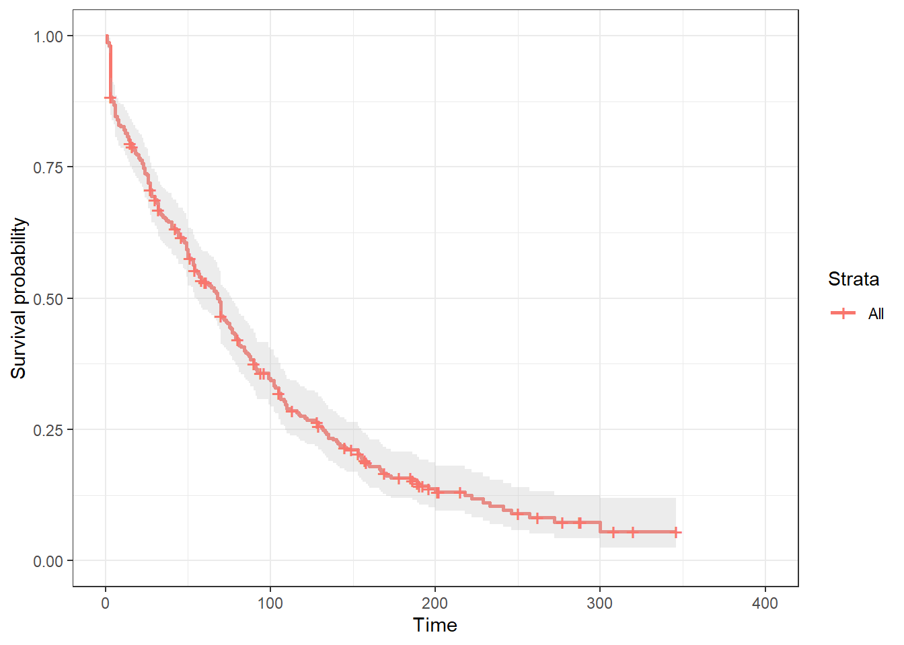
2.1. Quelle proportion et quel nombre de vaches avait « survécu » (i.e. n’avait pas eu de conception) à 5 jours suivant l’administration des traitement? Notez, que suite à l’administration de prostaglandines, une chaleur est souvent notée dans les 2-5 jours, suivant l’injection.
summary(survfit(Surv(dar, preg) ~ 1, data=pgtrial), times = 5)## Call: survfit(formula = Surv(dar, preg) ~ 1, data = pgtrial)
##
## time n.risk n.event survival std.err lower 95% CI upper 95% CI
## 5 277 42 0.868 0.0189 0.832 0.906Répoinse: 86.8% (IC95: 83.2, 90.6) des vaches n’avaient pas encore eu une conception au jour 5.
2.2. Quel était le temps médian jusqu’à la conception et quel était son IC95%?
library(survival)
#Le temps médian de survie
survfit(Surv(dar, preg) ~ 1, data=pgtrial)## Call: survfit(formula = Surv(dar, preg) ~ 1, data = pgtrial)
##
## n events median 0.95LCL 0.95UCL
## 319 264 68 55 77Réponse: Le temps médian jusqu’à la conception était 68 jours (IC95: 55 à 77 jours).
- Comparer maintenant les fonctions de survie des vaches ayant reçu la prostaglandine vs. le placebo.
library(survival)
survfit(Surv(dar, preg) ~ tx, data=pgtrial)## Call: survfit(formula = Surv(dar, preg) ~ tx, data = pgtrial)
##
## n events median 0.95LCL 0.95UCL
## tx=0 168 139 69 58 81
## tx=1 151 125 66 44 84km_fit_pg <- survfit(Surv(dar, preg) ~ tx, data=pgtrial)
library(survminer)
ggsurvplot(km_fit_pg, conf.int = TRUE)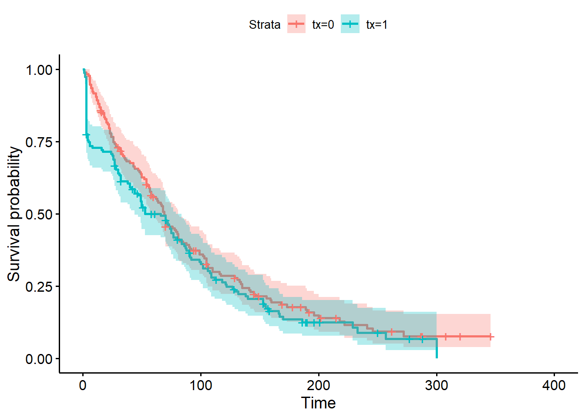
3.1. Visuellement que notez-vous lorsque vous comparez les fonctions de survie de ces deux groupes de vaches?
Réponse: On note que les fonctions diffèrent passablement très tôt suite au traitement. Par la suite, les fonctions deviennent de plus en plus similaires et sont assez équivalente à partir du jour 75, environ.
3.2. Quelles étaient les proportions de vaches gestantes dans les groupes prostaglandines vs. placebo aux jours 5, 26 et 100?
summary(survfit(Surv(dar, preg) ~ tx, data=pgtrial), times = c(5, 26, 100))## Call: survfit(formula = Surv(dar, preg) ~ tx, data = pgtrial)
##
## tx=0
## time n.risk n.event survival std.err lower 95% CI upper 95% CI
## 5 165 4 0.976 0.0118 0.953 1.000
## 26 127 38 0.749 0.0336 0.686 0.817
## 100 54 62 0.360 0.0380 0.292 0.442
##
## tx=1
## time n.risk n.event survival std.err lower 95% CI upper 95% CI
## 5 112 38 0.748 0.0354 0.682 0.821
## 26 104 9 0.687 0.0378 0.617 0.766
## 100 43 50 0.326 0.0398 0.257 0.415Réponse: la proportion de vaches gestantes serait l’inverse de la probabilité de survie. Donc:
- À 5 jours: placebo 2.4% (IC95: 0, 4.7), prostaglandine 25.2% (IC95: 17.9, 31.8)
- À 26 jours: placebo 25.1% (IC95: 18.3, 31.4), prostaglandine 31.3% (IC95: 23.4, 38.3)
- À 100 jours: placebo 64.0% (IC95: 55.8, 70.8), prostaglandine 67.4% (IC95: 58.5, 74.3)
3.3. Les fonctions de survie des deux groupes de traitement sont-elles statistiquement différentes?
library(survival)
survdiff(Surv(dar, preg) ~ tx, data=pgtrial, rho=0)## Call:
## survdiff(formula = Surv(dar, preg) ~ tx, data = pgtrial, rho = 0)
##
## N Observed Expected (O-E)^2/E (O-E)^2/V
## tx=0 168 139 149 0.677 1.59
## tx=1 151 125 115 0.878 1.59
##
## Chisq= 1.6 on 1 degrees of freedom, p= 0.2survdiff(Surv(dar, preg) ~ tx, data=pgtrial, rho=1)## Call:
## survdiff(formula = Surv(dar, preg) ~ tx, data = pgtrial, rho = 1)
##
## N Observed Expected (O-E)^2/E (O-E)^2/V
## tx=0 168 75.4 85.5 1.18 3.96
## tx=1 151 77.6 67.6 1.50 3.96
##
## Chisq= 4 on 1 degrees of freedom, p= 0.05Réponse: Le test de Wilcoxon indique que les fonctions de survie sont différentes (P = 0.05), mais le test de Log-rank indique qu’elles ne sont pas différentes (P = 0.20). Les résultats sont mitigés parce que dans ce cas, les différences étaient surtout observées dans les premiers jours suivant le traitement (ce que le test de Wilcoxon à retenu). En fait, nos connaissances en physiologie de la reproduction supporteraient un effet important des prostaglandines dans les 2-5 jours suivant l’injection. Par la suite, il serait surprenant de voir un quelconque effet positif.
Le test de Log-rank assigne le même poids à tous les points dans le temps. Pour ce test, les différences entre groupes aux jours 100, 150 ou même 200 sont donc aussi importantes que les différences au jour 5. Le test de Wilcoxon, par contre, donnera plus de poids aux premières périodes de temps lorsque la taille d’échantillon est encore large.
3.4. Comme la conception est, en général, un événement positif, les chercheurs trouveraient plus approprié de présenter la fonction d’échec plutôt que la fonction de survie dans leur article. Représentez les fonctions d’échec des groupes prostaglandines et placebo avec leurs IC95%. Que représente maintenant l’axe des Y?
library(survminer)
ggsurvplot(km_fit_pg, conf.int = TRUE, fun = "event")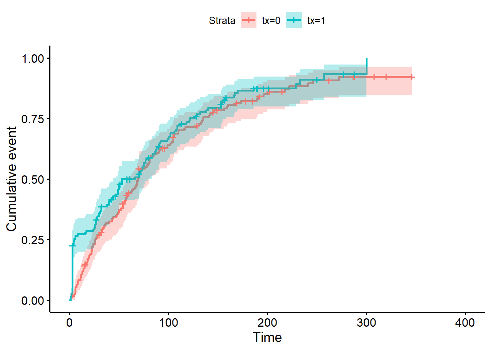
Réponse: L’axe des Y représente maintenant la probabilité de conception (plutôt que la probabilité de non-conception).
3.5. Lorsque vous comparer l’IC95% de la fonction d’échec de Kaplan-Meier du groupe prostaglandines à la fonction d’échec du groupe placebo. Arrivez-vous aux mêmes conclusions que celles obtenues à l’aide des tests de Wilcoxon et Log-rank?
Réponse: Oui, on voit que c’est en début de suivi que l’IC95 du groupe prostaglandines n’inclus pas la fonction d’échec du groupe placebo. À partir du jour 25 environ l’IC95 d’un groupe de traitement semble inclure la fonction de survie de l’autre, mais c’est encore plus clair à partir du jour 60 (approximativement). J’ai ajouté des lignes de référence à 25 et 60 jours dans la figure plus bas afin d’illustrer ces observations.
library(survminer)
ggsurv <- ggsurvplot(km_fit_pg, conf.int = TRUE, fun = "event")
ggsurv$plot +
geom_vline(xintercept = 25, linetype=2)+
geom_vline(xintercept = 60, linetype=2)3.6. Comparez finalement les fonctions de survie (ou d’échec) entre les groupes de traitement, mais par troupeau d’appartenance.
library(survival)
survfit(Surv(dar, preg) ~ tx + herd, data=pgtrial)## Call: survfit(formula = Surv(dar, preg) ~ tx + herd, data = pgtrial)
##
## n events median 0.95LCL 0.95UCL
## tx=0, herd=1 36 34 70 54 103
## tx=0, herd=2 57 43 70 63 88
## tx=0, herd=3 75 62 67 43 105
## tx=1, herd=1 37 29 73 47 109
## tx=1, herd=2 55 42 88 49 118
## tx=1, herd=3 59 54 44 26 77km_fit_pg <- survfit(Surv(dar, preg) ~ tx + herd, data=pgtrial)
survdiff(Surv(dar, preg) ~ tx + herd, data=pgtrial, rho=0)## Call:
## survdiff(formula = Surv(dar, preg) ~ tx + herd, data = pgtrial,
## rho = 0)
##
## N Observed Expected (O-E)^2/E (O-E)^2/V
## tx=0, herd=1 36 34 30.0 0.533 0.616
## tx=0, herd=2 57 43 48.9 0.713 0.894
## tx=0, herd=3 75 62 70.1 0.945 1.325
## tx=1, herd=1 37 29 26.2 0.296 0.338
## tx=1, herd=2 55 42 52.3 2.026 2.595
## tx=1, herd=3 59 54 36.5 8.450 10.145
##
## Chisq= 13.5 on 5 degrees of freedom, p= 0.02survdiff(Surv(dar, preg) ~ tx +herd, data=pgtrial, rho=1)## Call:
## survdiff(formula = Surv(dar, preg) ~ tx + herd, data = pgtrial,
## rho = 1)
##
## N Observed Expected (O-E)^2/E (O-E)^2/V
## tx=0, herd=1 36 17.4 18.0 0.0202 0.0337
## tx=0, herd=2 57 23.7 28.7 0.8981 1.6276
## tx=0, herd=3 75 34.3 38.7 0.4946 0.9882
## tx=1, herd=1 37 18.1 16.3 0.2004 0.3254
## tx=1, herd=2 55 25.0 28.1 0.3385 0.6322
## tx=1, herd=3 59 34.6 23.2 5.5361 9.3234
##
## Chisq= 10.8 on 5 degrees of freedom, p= 0.06ggsurv <- ggsurvplot(km_fit_pg, conf.int = TRUE, fun="event")
ggsurv$plot +theme_bw() +
theme (legend.position = "right")+
facet_grid( ~ herd)
Réponse: Le log-rank est significatif (P=0.02). Mais on ne peut rapporter l’effet du traitement séparément de l’effet du troupeau. C’est plutôt un test de l’ensemble des catégories de traitement*troupeau. On voit que les analyses non-paramétriques sont donc assez limitées pour modéliser l’effet de 2 prédicteurs (même catégoriques).
9.8 Travaux pratiques 9 - Analyses de survie semi-paramétriques
9.8.1 Exercices
Pour ce TP utilisez le fichier pgtrial.csv (voir description VER p.824).
Cette étude est un essai clinique randomisé sur l’effet de l’administration d’une dose de prostaglandine vs. d’un placebo (tx) au début de la période de reproduction sur le nombre de jours (dar) jusqu’à la conception (preg). L’hypothèse était que l’administration de prostaglandine réduirait le nombre de jours jusqu’à la conception. Les 319 vaches de cette étude étaient suivies jusqu’à un maximum de 346 jours en lait. Trois autres prédicteurs étaient aussi évalués: le nombre de lactation (lact; 1, 2, 3…), l’état de chair (thin; 0=normal, 1=thin) et le troupeau (herd; 3 troupeaux).
Comme vous l’avez vu au dernier TP, les modèles non-paramétriques sont plutôt limités lorsque l’on désire évaluer l’effet de plus d’un prédicteur. Les modèles de Cox (i.e. semi-paramétriques), par contre, offrent les mêmes possibilités qu’un modèle de régression (e.g. ajustement pour facteurs confondants, prédicteur quantitatif, interaction).
- À l’aide d’un modèle de Cox, évaluer l’effet du groupe de traitement (tx) sur le nombre de jours (dar) jusqu’à la conception (preg) tout en contrôlant les facteurs confondants thin, lact et herd.
1.1. Comment interprétez-vous les résultats de ce modèle pour la variable tx?
1.2. Quelles sont les suppositions que vous aurez à vérifier pour ce modèle de Cox?
1.3. Vérifiez que le hasard est bien proportionnel pour la variable tx (i.e. que l’effet de tx ne change pas dans le temps).
1.4. Vérifiez que la linéarité de la relation est bien respectée pour la variable lact.
- Vos évaluations préliminaires vous ont permis de conclure que l’effet du traitement change dans le temps et que la relation entre lact et H(t) est une courbe. Vous décidez donc du modèle suivant:
\(Ln H(t) = ln H_0(t) + β_1*tx + β_2*tx*time + β_3*(lact-1) + β_4*(lact-1)^2 + β_5*thin + β_6*herd\)
Où time est une variable catégorique ≤5 jours vs. >5 jours.
2.1. Comment change le risque de conception dans les 5 jours suivant le traitement lorsque les prostaglandines sont utilisées plutôt qu’un placebo? Et après 5 jours?
2.2. En supposant qu’une vache resterait dans un troupeau jusqu’à 500 jours suivant le traitement avant d’être réformée, évaluez l’effet qu’aurait pu avoir une censure informative.
2.3. Quelles sont les observations avec les résiduels les plus larges? Ont-elles quelquechose en commun?
2.4. Quelles sont les observations les plus influentes sur les coefficients \(tx\) et \(tx*time\)? Ont-elles quelquechose en commun?
9.8.2 Code R et réponses
Pour ce TP utilisez le fichier pgtrial.csv (voir description VER p.824).
pgtrial <-read.csv(file="pgtrial.csv", header=TRUE, sep=";")
head(pgtrial)## herd cow tx lact thin dar preg
## 1 1 1 0 1 0 1 1
## 2 1 2 1 4 1 1 1
## 3 1 3 1 1 0 2 1
## 4 1 4 1 1 0 3 1
## 5 1 5 1 6 0 3 0
## 6 1 6 1 1 0 3 1#J'indique les variables catégoriques dans mon jeu de données
pgtrial$thin <- factor(pgtrial$thin)
pgtrial$herd <- factor(pgtrial$herd) Cette étude est un essai clinique randomisé sur l’effet de l’administration d’une dose de prostaglandine vs. d’un placebo (tx) au début de la période de reproduction sur le nombre de jours (dar) jusqu’à la conception (preg). L’hypothèse était que l’administration de prostaglandine réduirait le nombre de jours jusqu’à la conception. Les 319 vaches de cette étude étaient suivies jusqu’à un maximum de 346 jours en lait. Trois autres prédicteurs étaient aussi évalués: le nombre de lactation (lact; 1, 2, 3…), l’état de chair (thin; 0=normal, 1=thin) et le troupeau (herd; 3 troupeaux).
Comme vous l’avez vu au dernier TP, les modèles non-paramétriques sont plutôt limités lorsque l’on désire évaluer l’effet de plus d’un prédicteur. Les modèles de Cox (i.e. semi-paramétriques), par contre, offrent les mêmes possibilités qu’un modèle de régression (e.g. ajustement pour facteurs confondants, prédicteur quantitatif, interaction).
- À l’aide d’un modèle de Cox, évaluer l’effet du groupe de traitement (tx) sur le nombre de jours (dar) jusqu’à la conception (preg) tout en contrôlant les facteurs confondants thin, lact et herd.
library(survival)
library(survminer)
PH_fit_pg <- coxph(Surv(dar, preg) ~ tx + lact + thin + herd, data=pgtrial)
ggforest(PH_fit_pg)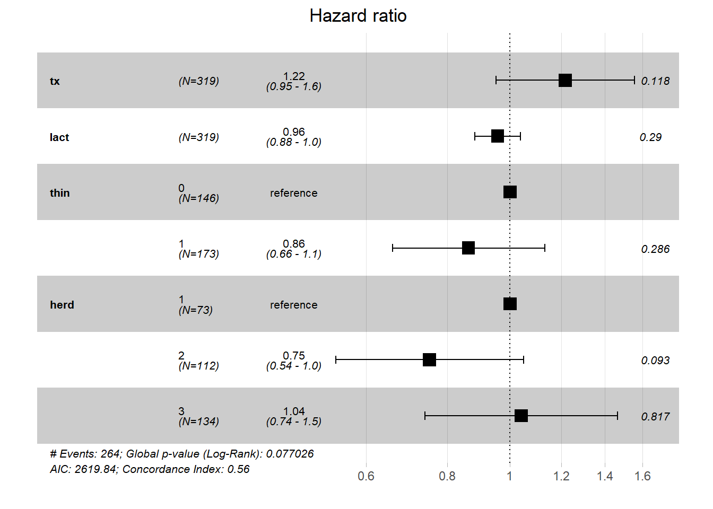
1.1. Comment interprétez-vous les résultats de ce modèle pour la variable tx?
Réponse: Le groupe de traitement (tx) n’est pas significativement associé au temps jusqu’à la saillie fécondante (P =0.12). Lorsque thin, lact et herd sont gardés constants, le risque de conception à n’importe quel moment était multiplié par 1.22 (i.e. le Hazard Ratio), mais l’IC 95% (0.95 à 1.6) inclus la valeur nulle (1.0).
1.2. Quelles sont les suppositions que vous aurez à vérifier pour ce modèle de Cox?
Réponse:
- Pour chacun des prédicteurs (i.e. tx, lact, thin et herd), on devra vérifier que le hasard est propotionnel (i.e. effet ne change pas dans le temps);
- Linéarité de la relation pour lact qui est un prédicteur quantitatif (on pourrait tester un terme au carré, par exemple);
- Censure non-informative;
- Indépendance des observations (i.e. pas de regroupement).
1.3. Vérifiez que le hasard est bien proportionnel pour la variable tx (i.e. que l’effet de tx ne change pas dans le temps).
Réponse: Ont peut s’y prendre de trois manières:
1) graphique de ln H(t) * ln du temps pour chaque niveau du prédicteur;
2) comparer courbes de survie non-paramétrique et semi-paramétrique;
3) ajouter une interaction avec le temps et vérifier si statistiquement significative (i.e. P < 0.05).
library(survival)
#Le modèle de K-M avec la variable qui m'intéresse
KM_fit_pg <- survfit(Surv(dar, preg) ~ tx, data=pgtrial)
#La figure ln(H(t)) par ln(temps)
plot(KM_fit_pg, col=c("blue", "red"), fun="cloglog", xlab="days", ylab="Log(H(t))")
Figure 9.9: Figure. Graphique du log du hasard cumulatif (ln H(t)) par le log du temps (ln(t)).
Réponse: Dans ce cas, le fait que les courbes ne sont pas parallèles indique que le hasard n’est pas proportionnel dans le temps.
library(survminer)
#La courbe de survie de Kaplan-Meier
ggsurvplot(KM_fit_pg)Figure 9.10: Figure. Courbes de survie de Kaplan-Meier pour la variable traitement.
#Le modèle de cox équivalent
library(survival)
PH_fit_pg <- coxph(Surv(dar, preg) ~ tx, data=pgtrial)
#La courbe de survie de Cox
ggadjustedcurves(PH_fit_pg, variable="tx")
Figure 9.11: Figure. Courbes de survie de Cox pour la variable traitement.
Réponse: La courbe de survie de Cox donne un résultat similaire: les courbes de Cox et de Kaplan-Meier sont passablement différentes (surtout avant 50 jours), cela indique que le hasard n’est pas proportionnel dans le temps.
Finalement, on pourrait aussi tester une interaction entre tx et le temps. Par exemple:
#Créer ma variable temps
pgtrial$t_cat <- cut(pgtrial$dar, breaks = c(0, 5, 26, Inf),labels = c("0-5 days", "5-26 days", ">26 days"))
#Le modèle de Cox avec l'interaction
library(survival)
PH_fit_pg_t_cat <- coxph(Surv(dar, preg) ~ tx + tx*t_cat - t_cat, data=pgtrial)
summary(PH_fit_pg_t_cat)## Call:
## coxph(formula = Surv(dar, preg) ~ tx + tx * t_cat - t_cat, data = pgtrial)
##
## n= 319, number of events= 264
##
## coef exp(coef) se(coef) z Pr(>|z|)
## tx 5.696984 297.967370 0.597725 9.531 < 2e-16 ***
## tx:t_cat5-26 days -3.485914 0.030626 0.650500 -5.359 0.0000000838 ***
## tx:t_cat>26 days -5.985539 0.002515 0.603662 -9.915 < 2e-16 ***
## ---
## Signif. codes: 0 '***' 0.001 '**' 0.01 '*' 0.05 '.' 0.1 ' ' 1
##
## exp(coef) exp(-coef) lower .95 upper .95
## tx 297.967370 0.003356 92.3388206 961.50842
## tx:t_cat5-26 days 0.030626 32.652272 0.0085582 0.10960
## tx:t_cat>26 days 0.002515 397.636926 0.0007703 0.00821
##
## Concordance= 0.681 (se = 0.018 )
## Likelihood ratio test= 219.6 on 3 df, p=<2e-16
## Wald test = 121 on 3 df, p=<2e-16
## Score (logrank) test = 485.2 on 3 df, p=<2e-16#Je pourrais faire un test de rapport de vraisemblance pour comparer les modèles avec et sans l'interaction
library(lmtest)
lrtest(PH_fit_pg_t_cat, PH_fit_pg)## Likelihood ratio test
##
## Model 1: Surv(dar, preg) ~ tx + tx * t_cat - t_cat
## Model 2: Surv(dar, preg) ~ tx
## #Df LogLik Df Chisq Pr(>Chisq)
## 1 3 -1200.1
## 2 1 -1309.0 -2 217.78 < 2.2e-16 ***
## ---
## Signif. codes: 0 '***' 0.001 '**' 0.01 '*' 0.05 '.' 0.1 ' ' 1Réponse: Notez que vous pouver « traiter » la variable temps comme bon vous le désirez en fonction de ce que vous connaissez de la biologie. Ici, j’ai catégorisé le temps (t_cat) de cette manière : <5 jours vs. 5-26 jours vs. >26 jours. Mon test de rapport de vraisemblance me donne une valeur de P < 0.001 pour le groupe de variables indicateurs \(tx*tcat\). Cela indique donc que l’effet du traitement (tx) sur le risque de conception n’est pas le même dans les 5 jours suivant le traitement vs. les jours 5 à 26 vs. après 26 jours . i.e. les hasards ne sont pas proportionnels. Afin de mieux illuster ces différences j’ai réorganisé mes résultats dans la table suivante.
library(emmeans)
#Je génère d'abord l'objet contrast à partir de mon modèle
contrast <- emmeans(PH_fit_pg_t_cat, c("tx", "t_cat"))
#Je demande les comparaisons pairées, je voulais voir Tx=1 vs Tx=0, j'ai donc du utilisé reverse=TRUE. Puis j'ai ajouté les IC95 avec confint
result <- confint(pairs(contrast, reverse = TRUE))
#Je retravaille mes résultats pour la présentation. D'abord en les mettant à l'exposant pour avoir des HR, puis en arrondissant.
result$HR <- round(exp(result$estimate), digits=2)
result$lowCI <- round(exp(result$asymp.LCL), digits=2)
result$hiCI <- round(exp(result$asymp.UCL), digits=2)
#Je ne conserve que les rangée (4, 8 et 13) et les colonnes (1, 7, 8, 9) qui m'intéressent
result2 <- result[c(4, 8, 13),c(1, 7, 8, 9)]
library(knitr)
library(kableExtra)
kable (result2, caption="HR et IC95 d'un traitement à la prostaglandine sur le risque de conception en fonction du nombre de jours suivant le traitement.")%>%
kable_styling()| contrast | HR | lowCI | hiCI | |
|---|---|---|---|---|
| 4 | (0-5 days 1) - (0-5 days 0) | 297.97 | 54.25 | 1636.51 |
| 8 | (5-26 days 1) - (5-26 days 0) | 9.13 | 3.14 | 26.53 |
| 13 | >26 days 1 - >26 days 0 | 0.75 | 0.50 | 1.12 |
Réponse: L’injection de prostaglandines a donc un effet important sur le hasard de conception dans les 5 jours suivant l’injection (HR: 297.97; IC95: 54.25, 1636.51), puis cet effet est maintenu, mais moindre entre 5-26 jours (HR: 9.13; IC95: 3.14, 26.53) et, finalement, il n’y a plus d’effet après 26 jours (HR: 0.75; IC95: 0.50, 1.12).
1.4. Vérifiez que la linéarité de la relation est bien respectée pour la variable lact.
Réponse: On peut s’y prendre de 2 manières:
1) ajout de termes polynomiaux;
2) graphiques résiduels de Martingdale (d’un modèle sans le prédicteur lact) par la variable lact.
#Créer les termes polynomiaux
pgtrial$lact_ct <- pgtrial$lact-1
pgtrial$lact_ct_sq <- (pgtrial$lact-1)*(pgtrial$lact-1)
pgtrial$lact_ct_cu <- (pgtrial$lact-1)*(pgtrial$lact-1)*(pgtrial$lact-1)
#Le modèle avec le terme au carré
PH_fit_pg_sq <- coxph(Surv(dar, preg) ~ tx + lact_ct + lact_ct_sq + thin + herd, data=pgtrial)
library(survminer)
ggforest(PH_fit_pg_sq)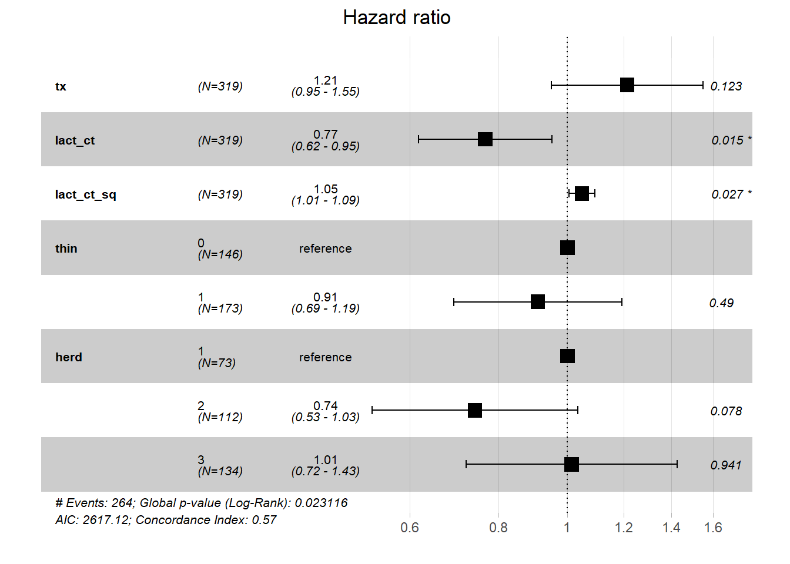
#Le modèle avec le terme au carré et celui au cube
PH_fit_pg_cu <- coxph(Surv(dar, preg) ~ tx + lact_ct + lact_ct_sq +lact_ct_cu + thin + herd, data=pgtrial)
ggforest(PH_fit_pg_cu)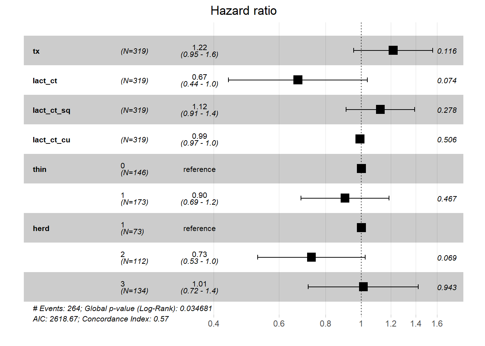
Avec les termes polynomiaux: lact au carré est significatif (P = 0.03), cela indique donc une relation curvilinéaire. lact au cube n’est pas significatif (P=0.51), l’ajout de points d’inflexion n’est donc pas nécessaire. Nous pourrions donc utiliser \(lact\) et \(lact^2\) afin de correctement modéliser la relation entre lactation et temps jusqu’à la conception.
Avec le graphique des résiduels de Martingdale par la variable lact on observera encore cette relation curvilinéaire:
#Faire rouler le modèle sans le prédicteur continu lact
PH_fit_pg_WO_lact <- coxph(Surv(dar, preg) ~ tx + thin + herd, data=pgtrial)
#Ajouter les résiduels de Martingale dans mon jeu de données
pgtrial$res <- resid(PH_fit_pg_WO_lact)
library(ggplot2)
ggplot(data=pgtrial, mapping=aes(x=lact, y=res))+
geom_point() + #Je demande d'ajouter le nuage de points (un 'scatterplot')
geom_smooth(method="loess", span=2)+ #Je demande d'ajouter la courbe lissée de type loess.
theme_bw() 
Figure 9.12: Figure. Graphique des résiduel de Martingdale en fonction de la parité.
- Vos évaluations préliminaires vous ont permis de conclure que l’effet du traitement change dans le temps et que la relation entre lact et H(t) est une courbe. Vous décidez donc du modèle suivant:
\(Ln H(t) = ln H_0(t) + β_1*tx + β_2*tx*time + β_3*(lact-1) + β_4*(lact-1)^2 + β_5*thin + β_6*herd\)
Où time est une variable catégorique ≤5 jours vs. >5 jours.
2.1. Comment change le risque de conception dans les 5 jours suivant le traitement lorsque les prostaglandines sont utilisées plutôt qu’un placebo? Et après 5 jours?
#Créer ma variable temps
pgtrial$t5 <- cut(pgtrial$dar, breaks = c(0, 5, Inf),labels = c("0-5 days", ">5 days"))
#Créer mes variables lact centrées et au carré
pgtrial$lact_ct <- pgtrial$lact-1
pgtrial$lact_ct_sq <- (pgtrial$lact-1)*(pgtrial$lact-1)
#Le modèle de Cox
library(survival)
PH_fit_pg_final <- coxph(Surv(dar, preg) ~ tx*t5 - t5 + lact_ct + lact_ct_sq + thin + herd, data=pgtrial)
library(emmeans)
#Je génère ensuite l'objet contrast à partir de mon modèle
contrast <- emmeans(PH_fit_pg_final, c("tx", "t5"))
#Je demande les comparaisons pairées, je voulais voir Tx=1 vs Tx=0, j'ai donc du utilisé reverse=TRUE. Puis j'ai ajouté les IC95 avec confint
result <- confint(pairs(contrast, reverse = TRUE))
#Je retravaille mes résultats pour la présentation. D'abord en les mettant à l'exposant pour avoir des HR, puis en arrondissant.
result$HR <- round(exp(result$estimate), digits=2)
result$lowCI <- round(exp(result$asymp.LCL), digits=2)
result$hiCI <- round(exp(result$asymp.UCL), digits=2)
#Je ne conserve que les rangée (2 et 5) et les colonnes (1, 7, 8, 9) qui m'intéressent
result2 <- result[c(2, 5),c(1, 7, 8, 9)]
library(knitr)
library(kableExtra)
kable (result2, caption="HR et IC95 d'un traitement à la prostaglandine sur le risque de conception en fonction du nombre de jours suivant le traitement.")%>%
kable_styling()| contrast | HR | lowCI | hiCI | |
|---|---|---|---|---|
| 2 | (0-5 days 1) - (0-5 days 0) | 226.96 | 49.77 | 1035.09 |
| 5 | >5 days 1 - >5 days 0 | 0.84 | 0.59 | 1.20 |
2.2. En supposant qu’une vache resterait dans un troupeau jusqu’à 500 jours suivant le traitement avant d’être réformée, évaluez l’effet qu’aurait pu avoir une censure informative.
#Je dois d'abord créer une nouvelle variable DAR qui prendrait la valeur 500 pour les vaches censurées
pgtrial$dar2 <- ifelse(pgtrial$preg==1, pgtrial$dar, 500)
#Et une variable alternative preg où toutes les vaches sont gestantes à la fin
pgtrial$preg2 <- 1
#Ensuite, je peux faire 2 modèles de Cox en utilisant une ou l'autre de ces nouvelles variables
library(survival)
PH_fit_pg_cens_info_n <- coxph(Surv(dar2, preg) ~ tx*t5 - t5 + lact_ct + lact_ct_sq + thin + herd, data=pgtrial)
PH_fit_pg_cens_info_p <- coxph(Surv(dar2, preg2) ~ tx*t5 - t5 + lact_ct + lact_ct_sq + thin + herd, data=pgtrial)Si on voulait plus particulièrement visualiser les effets pour le tx (et son interaction):
library(emmeans)
#Je génère d'abord l'objet contrast à partir de mon modèle
contrast_final <- emmeans(PH_fit_pg_final, c("tx", "t5"))
contrast_censp <- emmeans(PH_fit_pg_cens_info_n, c("tx", "t5"))
contrast_censn <- emmeans(PH_fit_pg_cens_info_p, c("tx", "t5"))
#Je demande les comparaisons pairées, je voulais voir Tx=1 vs Tx=0, j'ai donc du utilisé reverse=TRUE. Puis j'ai ajouté les IC95 avec confint
result_final <- confint(pairs(contrast_final, reverse = TRUE))
result_censn <- confint(pairs(contrast_censn, reverse = TRUE))
result_censp <- confint(pairs(contrast_censp, reverse = TRUE))
#Je retravaille mes résultats pour la présentation. D'abord en les mettant à l'exposant pour avoir des HR, puis en arrondissant.
result_final$HR <- round(exp(result_final$estimate), digits=2)
result_final$lowCI <- round(exp(result_final$asymp.LCL), digits=2)
result_final$hiCI <- round(exp(result_final$asymp.UCL), digits=2)
result_censn$HR <- round(exp(result_censn$estimate), digits=2)
result_censn$lowCI <- round(exp(result_censn$asymp.LCL), digits=2)
result_censn$hiCI <- round(exp(result_censn$asymp.UCL), digits=2)
result_censp$HR <- round(exp(result_censp$estimate), digits=2)
result_censp$lowCI <- round(exp(result_censp$asymp.LCL), digits=2)
result_censp$hiCI <- round(exp(result_censp$asymp.UCL), digits=2)
#Je ne conserve que les rangée (2 et 5) et les colonnes (1, 7, 8, 9) qui m'intéressent
result_fin2 <- result_final[c(2,5),c(1, 7, 8, 9)]
result_censn2 <- result_censn[c(2,5),c(1, 7, 8, 9)]
result_censp2 <- result_censp[c(2,5),c(1, 7, 8, 9)]
library(knitr)
library(kableExtra)
kable (result_fin2, caption="Modèle final.")%>%
kable_styling()| contrast | HR | lowCI | hiCI | |
|---|---|---|---|---|
| 2 | (0-5 days 1) - (0-5 days 0) | 226.96 | 49.77 | 1035.09 |
| 5 | >5 days 1 - >5 days 0 | 0.84 | 0.59 | 1.20 |
kable (result_censn2, caption="Modèle avec vaches censurées qui survivent jusqu'à 500 jours.")%>%
kable_styling()| contrast | HR | lowCI | hiCI | |
|---|---|---|---|---|
| 2 | (0-5 days 1) - (0-5 days 0) | 5.69 | 3.48 | 9.32 |
| 5 | >5 days 1 - >5 days 0 | 0.85 | 0.61 | 1.16 |
kable (result_censp2, caption="Modèle avec vaches censurées qui deviennent gestante au moment de la censure # v.")%>%
kable_styling()| contrast | HR | lowCI | hiCI | |
|---|---|---|---|---|
| 2 | (0-5 days 1) - (0-5 days 0) | 7.60 | 4.52 | 12.78 |
| 5 | >5 days 1 - >5 days 0 | 0.81 | 0.57 | 1.15 |
On voit que les conclusions restent les mêmes (effet du tx entre 0-5 jours, mais pas d’effet > 5 jours). Par contre, l’effet serait moindre (HR de 6 à 7 vs. HR de 226) si la censure était informative.
2.3. Quelles sont les observations avec les résiduels les plus larges? Ont-elles quelquechose en commun?
#Je peux ajouter les résiduels de déviance à ma table
pgtrial$resid_dev <- resid(PH_fit_pg_final, type="deviance")
library(ggplot2)
library(ggrepel)
ggplot(data=pgtrial, mapping=aes(x=dar, y=resid_dev)) +
geom_point() +
theme_bw() +
geom_text_repel(aes(label = cow))Figure 9.13: Figure. Résiduels de déviance en fonction du temps.
On note que les vaches 78 et 1 on des résiduels assez larges (i.e. > 3.0); les vaches 196 et 208 ont aussi des résiduels assez larges (i.e. entre 2.5 et 3.0). La vache 189 a, elle aussi, un résiduel assez large mais négatif. Évidemment, les résiduels positifs les plus larges sont des vaches qui ont conçu très rapidement (1 jour) suite au traitement (toutes placebo). Les vaches avec les résiduels négatifs les plus larges sont celles qui ont de très long suivi sans conception (i.e. DAR large et PREG=0). Il ne semble pas y avoir de patron particulier pour ces vaches (lorsqu’on inspecte les tables directement:
#En filtrant la table pour ne conserver que les résiduels standardisés larges
res_large <- subset(pgtrial, (resid_dev >=2.5 | resid_dev<=-2.5))
kable (res_large, caption="Observations avec les résiduels les plus larges.")%>%
kable_styling()| herd | cow | tx | lact | thin | dar | preg | t_cat | lact_ct | lact_ct_sq | lact_ct_cu | res | t5 | dar2 | preg2 | resid_dev | |
|---|---|---|---|---|---|---|---|---|---|---|---|---|---|---|---|---|
| 1 | 1 | 1 | 0 | 1 | 0 | 1 | 1 | 0-5 days | 0 | 0 | 0 | 0.9917920 | 0-5 days | 1 | 1 | 3.731375 |
| 74 | 2 | 78 | 0 | 2 | 1 | 1 | 1 | 0-5 days | 1 | 1 | 1 | 0.9947488 | 0-5 days | 1 | 1 | 3.858177 |
| 185 | 2 | 189 | 0 | 1 | 0 | 346 | 0 | >26 days | 0 | 0 | 0 | -2.3808125 | >5 days | 500 | 1 | -2.519159 |
| 192 | 3 | 196 | 0 | 1 | 0 | 3 | 1 | 0-5 days | 0 | 0 | 0 | 0.9183528 | 0-5 days | 3 | 1 | 2.982147 |
| 204 | 3 | 208 | 0 | 2 | 1 | 5 | 1 | 0-5 days | 1 | 1 | 1 | 0.8671546 | 0-5 days | 5 | 1 | 2.564270 |
2.4. Quelles sont les observations les plus influentes sur les coefficients \(tx\) et \(tx*time\)? Ont-elles quelquechose en commun?
#Créer les résiduels de déviance dans une table
y <- data.frame(resid(PH_fit_pg_final, type="score"))
#Joindre ces éléments dans ma table initiale
#Renommer les variables
library(data.table)
setnames(y, old = c('tx','lact_ct', 'lact_ct_sq', 'thin1', 'herd2', 'herd3', 'tx.t5.5.days'), new = c('score_tx','score_lact_ct', 'score_lact_ct_sq','score_thin', 'score_herd2', 'score_herd3', 'score_time_tx_inter'))
#Combiner les tables
a <- cbind(pgtrial, y)
#Visualiser résiduels de score de tx en fonction du temps
library(ggplot2)
library(ggrepel)
ggplot(data=a, mapping=aes(x=dar, y=score_tx)) +
geom_point() +
theme_bw() +
geom_text_repel(aes(label = cow))Figure 9.14: Figure. Résiduels de score de la variable tx en fonction du temps.
Pour ce coefficient, les vaches 76, 184, 187, 188 et possiblement 189 et 323 semblent être des observations influentes (i.e. elles ont beaucoup d’impact sur les estimés de ce coefficient).
#Visualiser résiduels de score de tx en fonction du temps
library(ggplot2)
library(ggrepel)
ggplot(data=a, mapping=aes(x=dar, y=score_time_tx_inter)) +
geom_point() +
theme_bw() +
geom_text_repel(aes(label = cow))Figure 9.15: Figure. Résiduels de score de l’interaction tx par t5 (temps catégorique) en fonction du temps.
Ces ont les mêmes vaches qui sont influentes pour le coefficient de l’interaction. Ce sont toutes des vaches avec un nombre de jours de suivi élevé, la plupart (5/6) sont des observations censurées.